1The Memory I Never Want to Lose
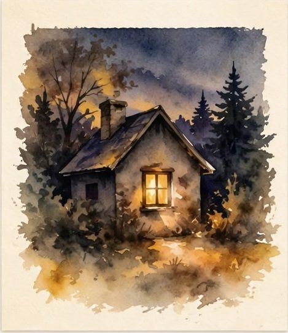
A small house at dusk, one window gold with lamplight.
Ask anyone, in a quiet moment, which memory they would save first, and they rarely hesitate long. It is not always the one they expected to name. This house has many rooms — a whole life is stored in it, corridor after corridor of ordinary days — but one room is different. The rest of the house exists, in the end, to keep that room warm. Every keeper knows which room it is. It is the one they check on without thinking, the one whose door they touch in passing, the one they would run back for if the whole house were falling.
The memory itself is usually small. An hour, often less. A kitchen at a certain light, a voice saying an ordinary thing, a road in a particular season. It holds no records and wins no prizes. Other memories are larger, louder, better documented. This one is simply the brightest, the way one window in a house at dusk is the lit one, and the others are only walls until someone comes home. The keeper does not apologize for its size. What matters about a room is not its floor plan. It is whether the life of the house quietly organizes itself around it.
So this hall begins where the keeper begins: with the admission that there is one memory, and that it is kept differently from all the others. Not under glass. Not chained to the wall. It is kept the way a hearth is kept — swept, fed, sat beside on ordinary evenings. The pages that follow walk the house slowly: the room where the memory lives, the telling that airs it, the senses that hold their copies, the people who share it, and the long view of what keeping finally means. Everything starts with naming the one.
2If the House Caught Fire
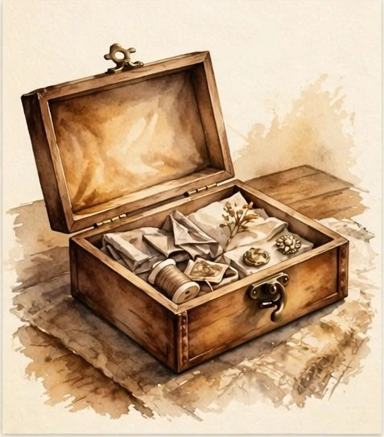
A keepsake box open on a table, its contents laid out in the light.
There is an old question people ask at kitchen tables: if the house caught fire, what would you run back in for. The answers come quickly — the photographs, the letters, the box on the high shelf — and they are honest answers. But underneath every one of them sits a prior answer that nobody bothers to say aloud. Before a single object is named, the memory itself has already been carried out, under one arm, without a decision ever being taken. It leaves first because it was never really furniture.
The thought experiment is useful precisely because it sorts without mercy. Chairs can burn. Paper can burn. The house in this book is built of both, and the keeper knows their prices. But the one memory is the single possession that is also a place. Lose the keepsake box and you lose evidence; the day itself still stands in its room, lit. That is why, when people play the fire game honestly, they grow quiet after the first quick answers. They are no longer listing objects. They are visiting the room they would actually save.
The keeper keeps the question on the mantel, not as a fear but as a scale. It weighs a life's contents quickly and without sentimentality. What survives the weighing is rarely what the owner displays in the front rooms. It is smaller, older, and warmer. Notice, next time the question is asked, how nobody names the grandest thing they own. They name the thing connected to the one hour. The fire is imaginary. The order of value it reveals is not, and the keeper trusts it completely. The register writes the answer down, and asks no second question.
3The One You'd Save First
To save a thing first is not only to love it most. It is to know, somewhere below deliberation, that other things lean on it. The one memory is load-bearing in that way. Whole years of a life are dated by it — before that summer, after that summer — and other memories hang on it like coats on the one strong hook by the door. Take it away and the rest would not vanish, but they would stand in a different, draughtier arrangement. The keeper phrases it plainly: some memories decorate a life, and one of them holds it up.
Often the saved memory is the one that explains the keeper to themselves. It may be the hour they were most plainly who they are — kind without effort, brave without noticing, happy without a reason anyone could invoice. Lose the certificates and the milestones and a person can still find their way home by that hour. Lose that hour, and the map of the self loses its brightest landmark. This is why the hand, in the imagined fire, does not wander. It goes straight to the room, the way a hand in the dark goes straight to the banister.
The house keeps no league table of keepers. In one house the saved memory is a wedding; in another it is a bus ride and a shared sandwich; in a third it is an afternoon when nothing, by any official measure, happened at all. The keeper records each choice in the register without comment and without rank. What is saved first is a fact about a life, not a grade awarded to it. The register is interested in the fact. It is one of the most truthful facts the house contains.
4Not the Biggest, the Brightest
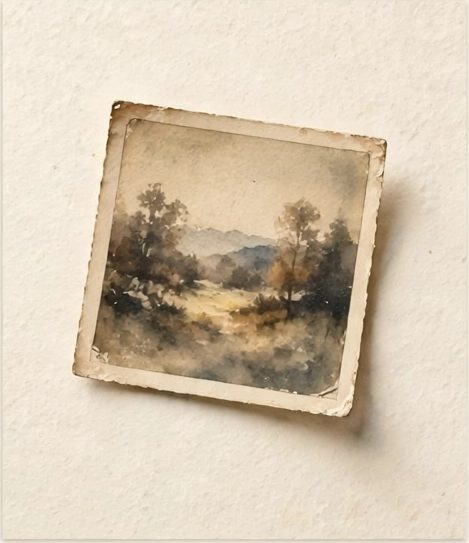
A single old photograph lying face up on a wooden table.
The official peaks of a life are well lit already. Weddings, graduations, arrivals, promotions — they come with witnesses, documents, and a date that can be looked up. The kept memory, nine times in ten, is none of these. It is a smaller hour, off the record: a joke at a sink full of dishes, a walk taken twice around the block because the talk was not finished, a face across a table in ordinary light. The archive of a life is impressed by size. The keeper is not. The keeper looks for brightness, and brightness keeps its own counsel about what it attaches to.
Brightness, in the register's usage, is a practical quality. It means that when the memory is visited, everything in it is still lit from inside: the faces are clear, the light of the day is exact, the words said can still be heard at their original volume. Dimmer memories may be grander, but they are recalled the way one recalls a story told by somebody else. The bright one is recalled the way a room is entered. There is no effort of reconstruction. You are simply, for a moment, back where the light was.
So the house measures its treasure by a lamp, not by a ruler. A small bright hour outweighs a large dim year, and every keeper who has been honest at the fire question already knows this in their hands. The brightest memory is also, not coincidentally, the one that returns uninvited — in queues, in crowds, in the middle of unrelated afternoons. It does not wait to be summoned because it is never fully stored away. It lives near the surface of the life, lit, the way the kept room in this house sits near the door.
5It Chose You, Too
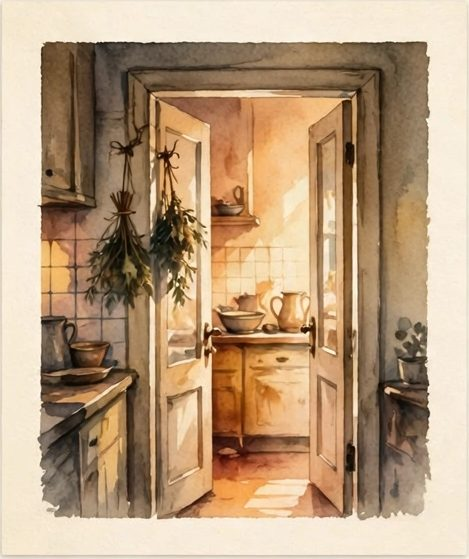
A kitchen doorway flooded with warm afternoon light.
Keepers like to say they chose the memory, and there is truth in it: they have told it, guarded it, given it the warm room. But the choosing was never entirely one-directional. Long before any decision was made, the memory had begun returning on its own — surfacing in the middle of other years, arriving unasked at the edges of sleep, attaching itself to a smell or a season. By the time the keeper formally adopted it, it had already been in residence for years, paying its rent in brightness. The adoption merely recognized the facts.
Repetition is a kind of election. Of the thousands of hours a life contains, a handful keep presenting themselves, and one presents itself above all. The keeper's files are full of this pattern, and the register no longer treats it as accident. Something in the hour fits something in the person, the way one key in a bunch turns smoothly in one lock. Neither the key nor the lock applied for the arrangement. It is noticed, usually late, and then it is kept — which is to say, it is allowed to go on happening.
This is a comfort the house offers early, because so much of keeping is otherwise effort. The central tenancy was never the keeper's burden to arrange. The memory chose its keeper with the same quiet certainty with which the keeper now chooses it back, and the keeping since then has been less a duty than a correspondence — each visit answered, each return welcomed. The register's marginal note on the subject is short: you keep it, certainly. But it had hold of you first, and it has never once let go.
6You Have Told It a Hundred Times
Part of why the one memory survives is embarrassingly practical: it has been in constant use. It has been told at birthdays and on long drives, across sickroom chairs and over fences, to people who were there and to people who arrived in the family decades after the hour it describes. Each telling is a small act of re-keeping, like re-pointing a wall one brick at a time. A memory that is never handled must bear its own weight alone. This one has been handled so often that its weight is distributed across many hands, many rooms, many years.
The tellings have left their marks, and the marks are not damage. The story has a known route now: the opening line, the turn, the pause before the best part. Its corners are rounded the way the corners of a well-used stair are rounded. Strangers sometimes hear this smoothness and mistake it for polish, even performance. Keepers know better. A stair is not smooth because it was decorated. It is smooth because it has been climbed, daily, by the whole household, and climbing is what stairs and stories are both for.
There is a further honesty to record: the hundredth telling is not identical to the first, and the keeper's later halls will open that seam without flinching. For now it is enough to notice that the telling and the keeping are the same gesture performed in public and in private. The memory lives because it is told; it is told because it lives. The circle is not a puzzle to be solved. It is the engine of the whole house, turning quietly under the floor of every room that follows.
7The Memory Has a Season
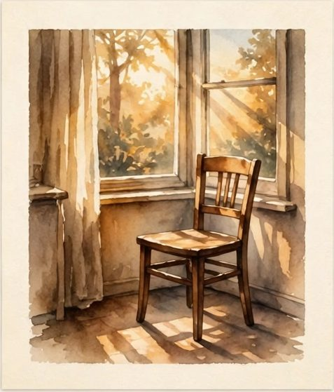
A chair by a window, late sun lying across its arms.
The kept hour happened in a season, and it never entirely leaves it. For most keepers the season is summer — the long light, the open windows, the year at its most generous — but the register holds winter memories too, and harvest ones, and one famous case involving rain that lasted, by the keeper's account, the entire month. Whatever the season, it returns on schedule every year and knocks politely at the house. The light changes in a particular way, a smell comes back over the fence, and the room is open before the keeper has decided anything.
This annual return is not nostalgia in the weak sense. It is closer to a tenant's inspection: the memory checks its room, finds it kept, and settles again. Keepers learn to expect the visit and, in time, to prepare for it slightly — the way one airs a room before a guest who is also family. There is pleasure in the predictability. Much of a life arrives unannounced and unwelcome; here is one arrival that can be circled, roughly, on the calendar, and trusted to come with its weather intact.
The season also explains the memory's coloring, because the room has no other weather than the hour's own. It is always that late afternoon in there, always that first cold evening, no matter what season the keeper is actually standing in. Snow may be falling on the real street while, one door inward, it is permanently the middle of August. The house does not find this strange. Every house in the register keeps at least one room where the year stopped politely and agreed to stay. The keeper keeps a small calendar there, and it has only one season on it.
8The Memory Has a Smell
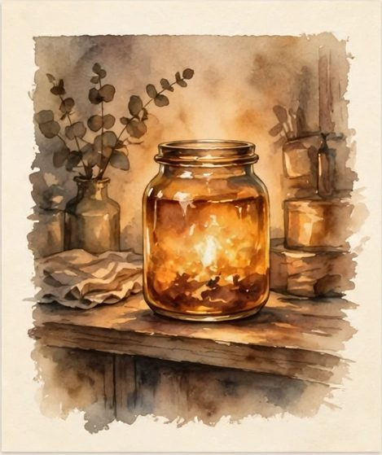
A jar glowing amber on a shelf in a dim room.
Ask a keeper to describe the one memory and the words will arrive in an orderly fashion: the place, the people, what was said. But ask what it smelled like, and the answer comes faster than the description — rain on hot dust, a particular soap, woodsmoke in a coat, the green smell of a riverbank, a kitchen herb crushed between fingers. The smell is not part of the memory in the way a detail is part of a story. It is more like the room's key. Turn it, and the whole place is open before the keeper has finished the sentence.
Keepers trust this copy of the memory in a way they trust no other, precisely because it has never been edited. Words get revised at every telling; faces soften; the order of events slips politely, as a later hall will admit. The smell simply returns, un-revised, the same each time, asking nothing. It does not argue its case. It stands in the doorway of the room like the smell of baking stands in a house doorway, and everyone who has ever come home to it knows exactly where they are.
So the house gives the sense of smell the first chair by the hearth, and the register notes the arrangement without embarrassment. The memory has a smell the way a house has an address. It is how the keeper would find the room blindfolded, in a crowd, in a foreign city where some market stall or some opened window briefly builds the old doorway again. For half a second the keeper stands in two places at once, and the nearer of the two is the kept one. The register files the scent under evidence, first class.
9Who Else Is in It
It is worth noticing how rarely the kept memory is a solo scene. Keepers search their registers for an exception and mostly fail. There is almost always someone else in the light: a parent at the stove, a friend on the wall beside you, a child asleep against a shoulder, a stranger whose name is lost but whose sentence is not. The memory is kept, in large part, because it is a meeting place. To enter the room is to be, briefly, in company that ordinary time no longer assembles in one place.
This is also why the memory cannot be treated as a private possession in any simple sense. The other people in it hold their own copies, lit from slightly different angles. The keeper's version is the warmest room in the keeper's house, but it is not the only house the hour lives in. A later hall will open those other doors properly — the different tellings, the version kept by someone who is gone. For now the register simply records the population of the room, because a room's inhabitants are part of its description.
Keepers, when they finally count, are often surprised by who is in there. Not only the beloved and the lost. Sometimes the person in the kept memory is someone the keeper barely knew and never saw again — a driver, a nurse, a neighbor from one summer. Their presence is not incidental. The memory kept them too, the way the room keeps whoever was standing in its light. The keeper who understands this stops asking why the hour matters. Part of the answer is simply that it is shared, and shared things are carried by more than one pair of hands.
10Why This One, of All
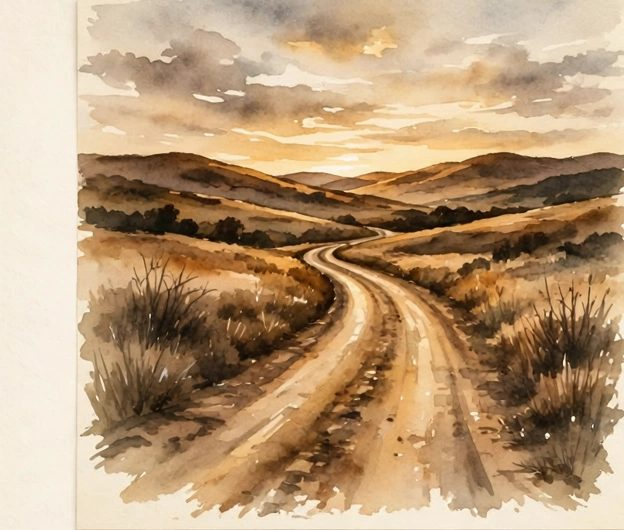
A road running toward low hills in evening light.
Sooner or later someone asks the keeper the fair question: why this one, of all? A life contains worthier candidates by the dozen — days of greater consequence, days better witnessed. The keeper's honest answer, in most of the register's files, is some version of not knowing. The memory was not selected by committee. It gathered its authority the way a path gathers walkers: by being the way everyone actually went. The house respects this answer completely. It has files enough to know that certainty on this subject is usually a sign that the asking stopped too early.
Still, the register can list the usual shapes an answer takes when one does form. Sometimes the kept hour was the last ordinary day before everything changed, and its brightness is the brightness of an unguarded world. Sometimes it was the first day the keeper felt entirely like themselves, and the room is kept as proof of title. Sometimes there is no hinge at all — no before and after — only an hour so complete in itself that the life keeps returning to it the way a hand returns to a pocket. Each shape is recorded. None is required.
In the end the house treats the question as itself a form of keeping. To ask why this one is to stand in the doorway and look at the room properly, perhaps for the first time in years. Keepers who ask it regularly keep better, the register finds — not because the answer improves the room, but because the asking is a visit, and visits are the whole maintenance schedule. The one memory does not need a defense. It needs attendance. Why this one, of all, is simply the most courteous way of attending.
11You Keep It Without Deciding To
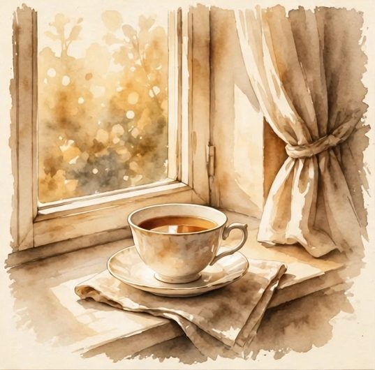
A teacup beside a sunlit window, its steam long gone.
No ceremony started the keeping. There was no evening on which the keeper sat down, reviewed the candidates, and awarded the warm room. Instead, across years of ordinary life, the memory simply acquired tenure. It was told once more than the others, visited once more than the others, until one day the keeper noticed what the whole house had long assumed: this room is occupied for good, and its occupant is not a guest. The other memories have addresses. This one has the deeds. Nobody signed anything; the keeping simply predates every signature in the house.
Undecided keeping has a texture of its own, and it is mostly habit. The memory became the one reached for in a certain mood, the one that opens when a certain song plays, the one the keeper's face goes to in photographs when asked to smile about something real. None of these reaches was a decision. Together they built a tenure more secure than any decision could have, because a decision can be revisited and a habit simply continues. The register notes the difference with respect: what the will builds, the will must maintain. What habit builds maintains itself.
There is a gentleness in this that the keeper receives as one of the house's mercies. The most important act of preservation in a life usually happens without the preserver's knowledge, the way the most important rooms in a childhood home were never chosen either. They were just where the light was good and the people were. A later hall will speak of deliberate keeping — writing things down, telling the right person — and those acts matter. But they build on a foundation they did not lay: a memory that appointed itself, quietly, and was never once refused.
12Say It Once, Plainly
Before the embroidery, before the hundred tellings have laid their smooth road, the keeper owes the memory one plain sentence. Who was there. Where it was. What happened, in the fewest honest words that will hold it. Most keepers can do this when pressed, and most are surprised by how much of the room fits into so small a frame. The sentence is not the story. It is the deed to the property — unbeautiful, exact, and sufficient to prove ownership in any weather, to any audience, including the keeper at three in the morning.
Plainness is also a kindness to the future. Details will wander; the register has a whole hall planned on the subject, and no shame is attached to it. But the plain sentence wanders least, because there is almost nothing in it to wander. It can be carried in a pocket through every upheaval a life contains, and produced entire. Keepers who have made their sentence find that the rest of the telling relaxes. Ornament may come and go as the audience changes. Underneath it, the deed holds the room's true name and address.
So the first hall ends with an exercise disguised as a room: say it once, plainly, and hear how little of it is lost. We were on the boat the summer the river was low, and your grandfather laughed until the oars stopped. The keeper files the sentence at the front of the register, ahead of every decorated version. Everything built later in this house — the versions, the copies the senses keep, the insurance of other keepers — is scaffolding around that one line. It was always the smallest room in the house. It contains the whole fire.
13The Room Where It Lives
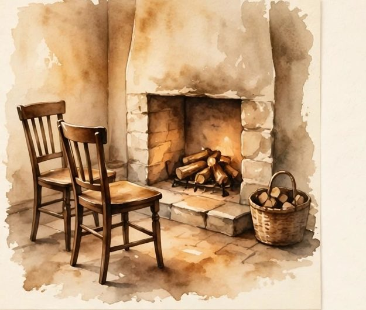
A small room with a hearth, chairs drawn close to the fire.
Every house in this book has a geography, and it is not the geography of the street outside. Rooms are placed by use and affection, not by the architect. The kept memory does not live in the attic, among the stored years, and it does not live in a vault, among the valuables nobody touches. It lives in a working room near the middle of the house — the room the keeper passes through on the way to everything else, and stops in more often than the day's business strictly requires. Location, here, is a form of love that never has to announce itself.
The room is inhabited, which separates it from every other place the past is kept. Stored memories are visited like storage: with a purpose, a ladder, and a sneeze. The kept room is entered the way a kitchen is entered — because one lives there part of the time. Its chair holds the shape of its sitter. Its hearth is not an exhibit. The keeper does not prepare to enter, any more than one prepares to come home. The door, the light, the particular quiet: all of it is simply the inside of the keeper's own life, correctly described.
Ask a keeper to draw their house and this room will be drawn first and largest, whatever its true dimensions, the way children draw the room the family actually gathers in. The register keeps many such drawings and trusts them over any floor plan. A life, correctly mapped, is not to scale. It is drawn by warmth and traffic. By that honest cartography, the kept room is the capital — a small, lit, central place, from which all the other corridors borrow their directions and much of their light. The keeper draws the map that way too, out of simple accuracy.
14It Has the Warmest Room
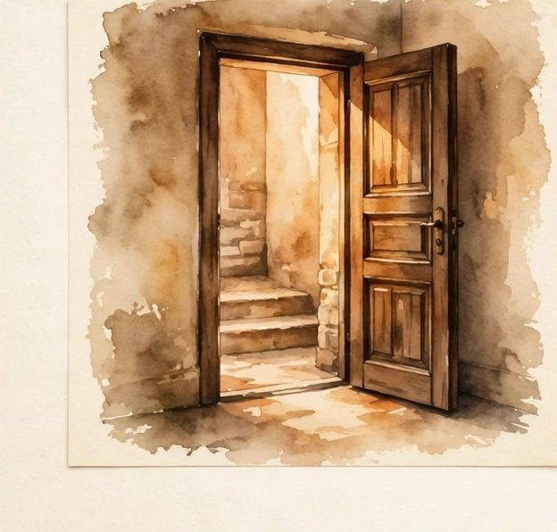
A door standing open onto warm light.
Warmth, in the register's vocabulary, has never meant sentiment. It means use, nearness, and the absence of frost in the corners. The kept room is the warmest in the house for the unglamorous reason that it is the most entered. Every visit carries a little of the day's living heat in with it, the way a much-used kitchen is warm by evening whether or not the stove was lit for its own sake. Rooms left shut grow cold on their own schedule. This one is rewarmed daily, almost accidentally, by traffic.
The keeper did not assign the warmth by rank, and the register is firm on the point, because it matters for everything the later halls will say about keeping. The room was not issued the best position and then visited out of duty. It was visited, and visited, and the position followed. Warmth is an outcome, not an honor. This is why the keeper's maintenance advice, when it finally comes, will be so plain: not protect it, not polish it — enter it. The room keeps itself warm in the only way rooms can. By being lived in.
The colder rooms of the house are not shamed by the comparison, and the keeper asks that they not be. Every life has its north-facing years, its shut spare rooms of periods nobody revisits with pleasure. They are part of the house and they hold what they hold. But the whole building is habitable because one room never went cold. On the worst days — the register is full of them — the keeper has simply gone and sat in the warm room until the rest of the house became possible again. That is what the warmth is for.
15Not a Shrine, a Hearth
A shrine is built for kneeling, and its first rule is that nothing on it may be touched. The keeper has seen houses try to keep the one memory that way: spoken of rarely, in lowered voices, wrapped against the ordinary air as if daylight were a solvent. It does not work, and worse, it is not necessary. The kept room in this house makes the opposite choice. Its center is not an altar. It is a hearth — a working fire, with a kettle on it, in a room where people also mend things, peel things, argue mildly, and laugh at the wrong moments.
A hearth is for use, and use is the memory's natural element. The kept hour is consulted on ordinary days, borrowed against bad ones, told over the washing up. It is not diminished by contact; it is maintained by it, the way a fire is maintained by being cooked on and sat beside, not by being photographed. The register's doctrine is plain enough to be carved over the door: kept means carried, and carried means handled, daily, with unceremonious hands. Relics belong to institutions. This memory belongs to a life, and a life is not a glass case.
The difference shows in the keepers. Shrine-keepers grow anxious, because glass can break and silence can curdle. Hearth-keepers grow steady, because a fire tended is a fire trusted. If this house has a single argument to make across all its halls, it is this one, made early and made quietly: do not worship the one memory, and do not embalm it. Sit by it. Cook on it. Let it warm the room it has already warmed for years. The rest of the keeping follows from that posture, as naturally as heat follows a fire.
The Memory Desk
One desk receives all correspondence for this house — questions, corrections, and word of any memory you keep: where it lives, who else is in it, and how it is holding up against the years. It is read in the order it arrives.
16The Door Is Never Locked
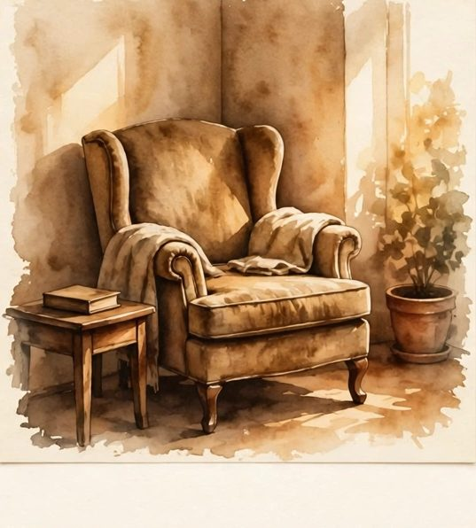
An armchair in the warmest corner of a room.
Some rooms in a life are kept locked for good reasons, and the register does not pry at them; every keeper has doors that open twice a decade, and the house honors the schedule. The kept room is not one of those. Its door is never locked — not ceremonially barred, not even latched against the weather. It stands somewhere between open and ajar at all hours, in the manner of a room in a family house that everyone passes and anyone may enter, where the light is left the way it was because someone will be back in a minute.
An unlocked door changes the memory's whole relation to the keeper's day. Locked rooms are visited deliberately, with preparation, and therefore rarely. This room can be entered in the middle of anything — a sentence of it during a meeting, the whole of it across a long red light. There is no threshold ritual, no composing of the face. The keeper is simply, for a few seconds, in the other place, in the good light, among the kept people. Then the meeting resumes, and nobody at the table knows that a door was opened and closed without a sound.
The unlocked door is also an invitation, and this is its second work. Because the room is never barred, others can be brought in without ceremony: the telling begins mid-conversation, the keeper says you would have liked it there, and a guest steps into the light. Locked memories must be announced before they are shared, and announcement frightens both parties. This one is shared the way a view is shared — by a gesture toward the door. The register considers this the room's chief social virtue. It is the least guarded valuable thing most keepers own.
17Other Memories Visit It
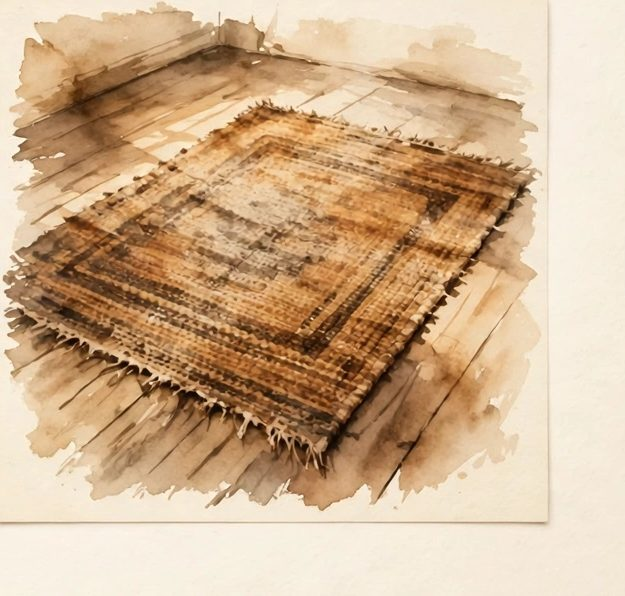
A rug worn smooth in the middle of a floor.
The kept room is not jealous of its position. Lesser memories — the ones with no room of their own, the half-remembered afternoons and faces without dates — come and sit in its light, and the keeper lets them. It does them good. A stray detail that belongs nowhere else will settle by the hearth for an evening, and sometimes, warmed and attended to, it will remember where it belongs and go home enriched. The register has watched whole years get re-sorted this way, around the fire of the one bright hour.
The traffic also runs in the other direction: the kept room lends its light outward, and other memories are dated by its lamp. That was the summer of the boat. The year before the winter in the flat. Keepers navigate their own archives by this room the way sailors take a bearing from the one lit headland. It is not that the other years are dark. It is that one point in them is fixed and bright, and from a fixed point all distances can be measured. The kept memory, without ambition, has become the house's compass rose.
There is an orderliness in such a house that keepers rarely credit to the right source. They praise their own record-keeping, their albums, their tidy minds. The register knows better. The house is orderly because its capital is a real capital: a place where stray facts gather, where the chronology holds court, where every smaller memory knows it may present itself. A rug worn smooth in the middle of a floor is the signature of such a court. It means the room is used by the whole household of the past, and finds the use an honor.
18The Room Is Small and the Light Is Good
New keepers are sometimes embarrassed by the room's dimensions, as if the size of the memory were a measure of the life. The register settles the matter early: the kept room is small in nearly every file it holds. The bright hour usually lasted an hour. Sometimes it lasted the length of a song, or the time it took to walk a dog around a lake. A few famous cases occupy under a minute. The keeper is asked to stop apologizing. In this house, importance has never been issued by the square foot, and the smallest room is routinely the one the whole building leans toward.
What the room lacks in extent it repays in light. Visitors from later halls — the senses, the other keepers, the long view — all remark on the same quality: the light in the kept room is exact. It falls the way it fell, at the angle it fell, and it has not been improved in the telling. Small rooms with good light are the ones people actually live in; the great halls of a house are for occasions, and occasions are rare by definition. The kept memory is not an occasion. It is a daily room, and daily rooms earn their size honestly.
So the keeper keeps the room's true measurements in the register without inflation, and finds the entry steadier for it. An hour, more or less. A handful of people. One place, one season, one quality of light. That is the whole estate, and it is enough to warm a house for a lifetime. The doctrine of this hall can be written on the door: do not measure the room. Sit in it. Bigness is a property of barns and empires. Brightness is a property of kept things, and kept things are the subject here.
19It Is Kept in the Body, Too
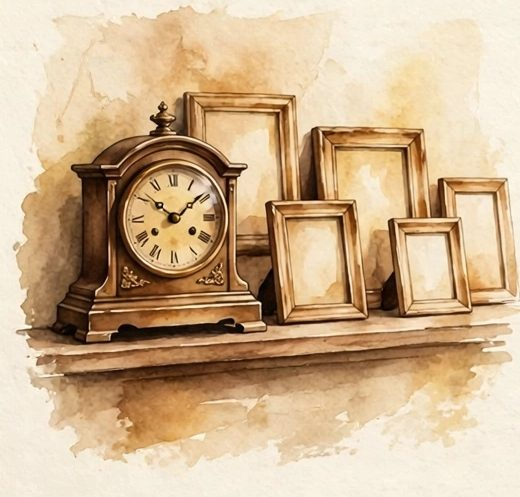
A mantel clock beside small empty picture frames.
The keeping is not done by the mind alone, whatever the keeper may claim at the desk. Enter the room — in the middle of a crowded day, say — and something in the body arrives a half-second before the words do. The shoulders come down from their working height. The breath changes its route. The face, observed by friends at such moments, briefly stops being the face of the present year. The register records these facts without ornament, because they are the plainest evidence it owns that the room is real and inhabited, not a story the keeper tells about furniture.
The body, in fact, recognizes the room the way it recognizes a childhood staircase: before thought, by gradient and habit. This is why the memory can be entered so fast and left so gently, without the lurch that attends deliberate recollection. Nothing has to be assembled. The keeper does not build the room at each visit, any more than a hand builds the banister it slides down. The room is kept the way a path is kept — by the whole person walking it, body included, until the way is simply known.
Later halls will give the hands their own register entry, and the senses their whole wing of the house. Here it is enough to establish the principle on which those halls stand: the one memory is a kept thing in the flesh as well as in the word. It is carried in posture, in appetite, in the tempo of a walk on a certain kind of afternoon. A memory kept only in sentences would be a guest in the house. This one is a resident. The body pays part of its rent, daily, without being asked, and the keeper is grateful for the arrangement.
20The Hands Remember Their Part
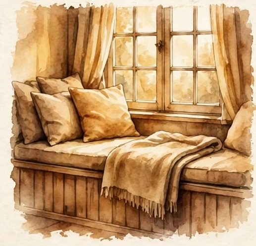
A window seat with a folded blanket, waiting.
In most kept memories, if the keeper looks honestly, the hands were busy. Holding a cup with both hands because it was hot. Gripping a rail, a rope, a bicycle's worn handles. Peeling, mending, dealing cards, carrying a sleeping child whose weight has long since become legendary in the family. The bright hour was not only seen and heard; it was handled. And the hands, those unliterary archivists, have kept their own copy of it ever since, in a script of grips and weights that no telling has ever needed to spell.
The proof arrives in ordinary moments. Make the old motion — lift the same kind of cup, haul the same kind of rope — and the room opens a crack before the mind has located the door. Keepers report this with a small embarrassment, as if it were a trick of the light. The register records it as the opposite of a trick: it is the memory's most literal form of storage. The hands learned the hour by doing it, and they have forgotten nothing they learned by doing. What the tongue may revise, the grip retains.
So the house counts the hands among its junior keepers and gives them their due in the register, ahead of several more talkative witnesses. They do not tell the memory; they hold its edges. When the keeper is old, and the telling may come slower, the hands will still know the weight of the cup, the give of the rope, the exact size of the child. A memory that lives in the hands cannot be lost all at once, or in one way only. The house finds this a profound structural comfort, and enters it here, in the room-keeping hall, where it belongs.
21A Room You Can Enter in a Crowd
Here is the room's daily miracle, so familiar that keepers forget to count it as one: the door opens anywhere. On a station platform with the loudspeaker cracking. In the middle of a meeting that has gone an hour past its usefulness. In a hospital corridor, in a queue at a government window, in the passenger seat of a car on a road the keeper would rather not be traveling. The kept room does not require quiet, privacy, or ceremony. It requires only the keeper, deciding — or half-deciding — to stand in it for the length of a breath.
A few seconds inside changes the temperature of the surrounding day, and the change is practical, not decorative. The keeper returns to the platform or the meeting with the shoulders down and the voice at its natural floor. Colleagues have mistaken this for composure, even for temperament. The register knows it for what it is: a visit. The keeper has a room the rest of the table does not know about, kept warm at a fixed address, and the whole of a difficult afternoon can be quietly rearranged around the fact of having been there.
Let the doctrine be stated plainly, because a later hall will need it when the subject turns darker: the room is not an escape. Nothing in it denies the crowd, the corridor, the queue. The keeper does not hide in the memory; the keeper is hosted by it, briefly, the way a traveler is hosted by a lit doorway in a strange street, and then goes on. The crowd is still there when the keeper steps back out. What has changed is only the keeper's weather — and weather, as this house never tires of noting, is most of what a day is made of.
22Dust Is Not Neglect Here
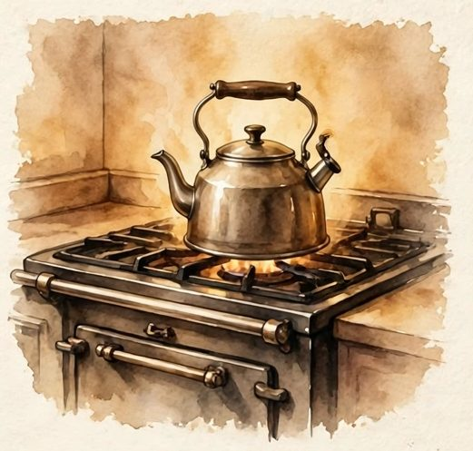
A kettle keeping warm on a stove, steam rising at the spout.
Visitors from tidier houses sometimes remark on the dust. Let them. The kept room is not maintained to a shine: whole corners of the bright hour have not been visited in years, certain objects in it would come away gray on a white glove, and the keeper has no intention of apologizing. Dust, in this house's vocabulary, is simply the visible record of which parts of the memory are in daily use and which are resting. A room with no dust anywhere is not a room where anyone lives. It is a room staged for a photograph, and photographs are a later hall's problem.
The essential thing is that the hearth itself never goes cold, and a hearth does not need the whole room polished to do its work. The center of the memory — the faces, the light, the one sentence everybody remembers being said — is in constant use and therefore bright. The periphery can rest in its soft gray for decades without loss. Indeed the keeper suspects the dust is part of the room's honesty. It shows exactly where the keeper actually goes in the memory, and where the keeper only claims to go when giving the official tour.
So the register forbids the white glove and records the dust as an asset. A lived-in room, kept by a living keeper, in the middle of an ongoing life: this is the whole standard. Keepers who have tried to maintain the memory like a showroom exhaust themselves and, worse, stop entering it, because nobody relaxes in a showroom. The dust is the signature of relaxation. It says the room is entered in working clothes, on working days, by someone who belongs there — which is the entire point of keeping anything at all.
23The Room Keeps Its Own Weather
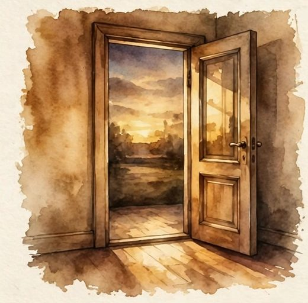
An open door, evening light spilling across the floorboards.
Whatever the day is doing outside, the weather inside the kept room does not change. It is always the weather of the bright hour: that held breath before the rain, that windless late afternoon, that first cold evening when the lamps came on early. Keepers have tested this across decades and climates, in countries the memory never saw, and the report is uniform. Cross the threshold and the season is the season it was. The room keeps its own weather the way a valley keeps its own mist — not by effort, but by nature of the place.
The weather is not a detail among details; it is half the memory's identity. Change it and you would have a different hour entirely. The same people, the same words, under rain instead of that long gold light — the register would file it as another room in another house. This is why keepers, telling the story, so often begin with the weather, and why listeners forgive them for it. They are not clearing their throats. They are setting the pressure and the light, without which nothing that follows can be seen correctly.
The keeper of a long life learns, eventually, to take readings from this fixed climate. A hard year is partly measured by how often one needed the room's weather; a good one, by how often one visited it for pleasure instead of shelter. Either way the readings are kind, because the weather in there is the weather of the best-kept hour, and it has never once turned. Other rooms in the house have their storms and their droughts, faithfully recorded. This one holds its single perfect pressure, year after year, like a held note — the house's tuning fork.
24Leave the Door Open Behind You
When the keeper leaves the room, the instruction of this house is simple: do not latch the door behind you. Leave it the way it was found, somewhere between open and ajar, with the light doing what light does — trailing out across the corridor floor, reminding the rest of the house of the address. The next visit may come at any hour and without warning, in the middle of grief or of grocery shopping, and a door that must be unlatched is a door that arrives a moment too late. Readiness is the room's whole etiquette.
The open door also works on the keeper's behalf in company. Someone passing — a child, a friend, a stranger mid-conversation — catches the light from the corridor and asks, in effect, what is in there. This is how most tellings actually begin: not with a decision to perform, but with a guest's glance toward a brightness the keeper had left available. The keeper who latches the door keeps the memory safer and poorer. The keeper who leaves it ajar risks interruption and gains an audience, and audiences, as the next hall will show, become keepers.
So the second hall of the house closes with the door open, deliberately, on the best-lit room in the building. The room is established now: warm, small, central, unlocked, inhabited by hands and weather and other visiting years. What remains is to watch what a kept thing does when it is carried out of its room and into the world of other people — which is to say, told. The telling is the memory's second life, and the house turns to it the way a keeper turns at evening toward the kitchen, where the tables are.
25The Telling
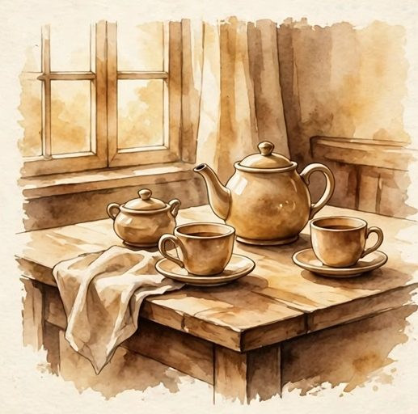
A kitchen table set for talk, cups and a teapot waiting.
A memory kept only in silence is kept once. Told, it is kept twice — once in the keeper, and once in every listener who carries it away. This is the arithmetic the third hall of the house is built on, and the keeper asks that it be taken literally. The telling is not a report issued about the room, the way a landlord might describe a property. It is a visit conducted in company: the door opened, the guests brought in, the light allowed to fall on new faces. The memory comes back from each telling slightly more inhabited than it left.
There is a risk in it, and the house does not hide the risk. A told thing can be mishandled, misheard, carried off in the wrong shape. Details will wander — a later room in this very hall is reserved for their wandering, and it will treat them without blame. But the keeper has weighed the alternative across a whole register of silent houses, and the finding is not close. Untold memories do not stay pure. They stay alone, and what stays alone in a life thins, the way an unvisited room thins, no matter how bright its furniture.
So the telling is honored here as the memory's second hearth. Everything in this hall follows the story out of the kept room and around the world: to tables, to children, to strangers on trains, into the keeper's own ear at midnight. Watch how it changes shape for each audience and loses nothing essential. Watch who ends up keeping it. The register's claim is a modest one, and the whole hall is its evidence: a story is not what the memory wears. It is one of the ways the memory is built.
26Told at Tables
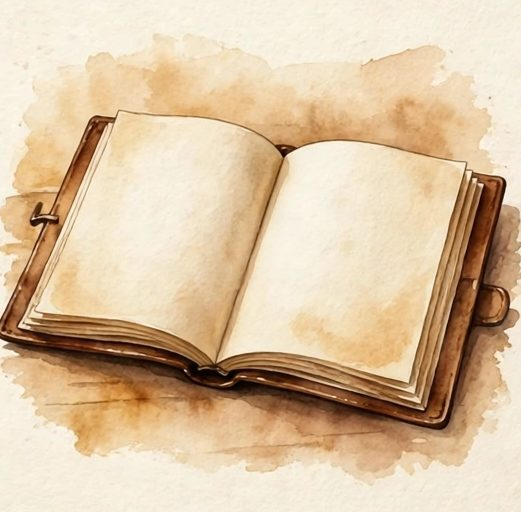
An open album with blank pages lying on a table.
The telling has a natural habitat, and it is not a stage. It is a table after a meal, when the plates have been pushed back and nobody is in a hurry to be the first to stand. Something in the posture of people at a finished table — fed, seated, unhurried, slightly lit by the evening — lengthens every story to its proper size. The keeper has told the one memory standing up, in hallways, over the phone, and it works in all those places. But it lives at tables. At tables it gets its weather back.
Tables also govern the telling's mercy. A story told across a table is told to faces the teller can watch, and a good keeper watches them: speeding past the part that needs no dwelling, slowing where a listener has leaned in. This is why the hundredth telling is not a recitation. It is re-hosted, every time, in a new room of listeners. The album on the table may stay closed. It is the talk that opens it, page by page, and some of the pages, to the keeper's continuing surprise, turn out to be blank in the official version and full in the told one.
Ask old keepers where the memory was told most, and they will not name halls or occasions. They will name tables — the one in the flat with the wobble, the one at the house that was sold, the plastic one at the hospital café — until the keeper's whole life comes furnished. The register does not find this accidental. Tables are where a life actually gathers its people, and the telling, which exists to gather people into the room of the memory, goes where the gathering already is. The story follows the furniture of love, and the furniture is mostly tables.
27The Version for Children
Every keeper keeps a version for children, whether or not it was ever consciously edited. It is shorter. The light in it is the same, but the shadows are carried by the teller, silently, in the parts left out. The frightening sentence is softened or postponed; the sad one is told as a plain fact and wrapped in the warmth of everything around it. Children receive the room with its hearth lit and its cellar door shut, and this is not falsification. It is hospitality, sized to the guest, and every good host in the register practices it without being taught.
What children repay, in exchange for the edited version, is the finest questioning in the house. Adults listen to a telling with the manners of their tribe; they nod at the turns and wait for the end. Children interrupt at the load-bearing points. Why was the boat blue. What did the dog do then. Did grandfather know he was funny. Keepers, answering, regularly recover details that had been resting in the dust for twenty years — the child's question goes straight to a corner the keeper's own visits never reach. The version for children ends up, paradoxically, expanding the archive.
And there is the longest view of all, which the keeper records without sentimentality: a child who has heard the telling is a keeper in waiting. The memory has been placed, early, in a second house, where it will be kept to a different standard and under a different roof-tree, long after the first house has closed its doors for the night. This is not why the story is told to children — it is told because they ask, and because the table is there. But the register notes the consequence in its driest hand. It is how the room survives its keeper.
28The Version for Strangers
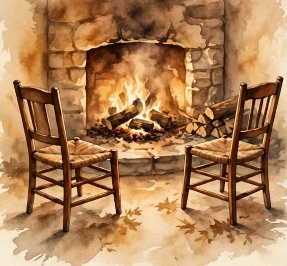
Two chairs turned toward each other by a fire.
Strangers receive the outline. This is the keeper's instinct, and the register approves it: the setting, the turn of the hour, the bright moment itself — without the family footnotes, without the dramatis personae that only a cousin could follow. Told this way, the memory travels light. It can be carried onto a train, into a waiting room, across a counter, and set down entire in five minutes, leaving the stranger oddly unwilling to reach their stop. The outline is not a lesser version. It is the version with everything unnecessary honorably discharged.
And yet the register holds a curious counter-file: the times the stranger got the whole of it. There are hours — long journeys, delayed nights, the strange intimacy of people who will never meet again — when the footnotes come out too, and the stranger listens like family. Keepers report these tellings with a particular gratitude. The stranger's hearing is the purest instrument the house owns, because it carries no prior version to defend. Hearing it fresh, the keeper sometimes hears their own memory fresh, and sees which parts of it were furniture and which were always the fire.
The lesson the house draws is not that strangers deserve more or less of the story, but that the story is sturdier than its keeper feared. It survives the outline and it survives the full text; it survives translation into a stranger's own remembered light, which is what every listener quietly performs. A thing that can only be kept one way, by one person, in one room, is fragile by design. The one memory is not. It has been told to strangers on three continents, in the register's accounting, and it has come home every time, essentially itself.
29Details That Wander
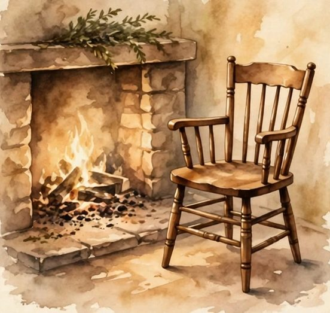
A storyteller's empty chair beside a hearth.
Now the seam, opened as promised, without shame. In the hundredth telling, the car in the story is a different color from the car in the first. The day itself may have migrated, politely, a year in either direction. A sentence spoken by one person in the room has been gradually reassigned to another, who says it better. The keeper who notices these things — and all keepers notice eventually — faces a small honest crisis at the desk: is the kept thing still the kept thing, if its details will not hold still? The house's answer is the doctrine of this hall, and it is yes.
Details wander because the telling is alive, and living things are re-made slightly at every use. The memory is not a transcript smuggled out of the past; it is a kept telling, rebuilt each time from the same bright materials by a builder who has also changed. The register insists on the builder's innocence. Nobody sits down to falsify the car. The car changes the way a path changes course across a field — by being walked, in weather, over years, by someone whose destination never moved. To call it lying would be to misunderstand walking.
What does not wander is the load-bearing structure, and keepers can verify this in their own files. The people stay the people. The light stays the light. The one sentence that must never be left out — the next room in this hall is devoted to it — stays word-perfect across decades, while upholstery changes around it. The house's image for the whole arrangement is tailoring: the suit is re-cut, gently, as the wearer changes, because a suit that cannot be re-cut cannot be worn for a lifetime. An honest memory admits its seams. It is worn, not framed.
30What You Never Leave Out
Every practiced telling has one beat that is never skipped. It may be a line of dialogue, preserved in its original wording like a coin in a bezel. It may be a gesture — the way someone pushed back from the table, laughing, and the laugh itself. It may be a small event of no consequence to anyone outside the room: a dropped oar, a dog arriving, a door opening at the exact wrong and therefore perfect moment. Whatever it is, the keeper knows it by a simple test. Leave it out once, and the story comes home wrong, and even the strangers know.
The register has inquired into why this beat, of all the hour's contents, is the permanent one, and the answers form a pattern. It is rarely the climax by any public measure. It is the moment the memory's whole meaning changed hands — the second the ordinary afternoon revealed what it was actually about. Keepers describe it the way masons describe a hearthstone: everything else in the structure can be, and has been, rearranged across the tellings, but the building's heat comes from one fixed place, and the flue is aligned to it. Move it, and nothing draws.
So the keeper guards the beat the way the beat deserves: not anxiously, not under glass, but by the simple discipline of never once leaving it out. Generations of listeners have done the rest — children correct a telling that skips it, the way they correct a song sung with a missing verse. The beat's permanence, in the end, is not the keeper's achievement alone. It is a treaty between the memory and everyone who has ever kept it. The house records the treaty in its driest, warmest hand: some things are not edited, because editing them was tried by time itself, and time declined.
The Memory Desk
One desk receives all correspondence for this house — questions, corrections, and word of any memory you keep: where it lives, who else is in it, and how it is holding up against the years. It is read in the order it arrives.
31The Pause Before the Best Part
A folded letter resting on a table by lamplight.
Every keeper who has told the story more than a dozen times has acquired, without studying for it, the pause. It comes just before the best part: a sip taken, a breath drawn, a glance around the table to confirm that everyone is still aboard. Listeners who know the telling lean in at it the way audiences lean at a held note. Listeners who do not know it feel, without being told, that the ground of the story is about to change. The pause is short. Its authority is total. It is the smallest piece of stagecraft in the house, and the most loved.
The register, which distrusts ornament, has examined the pause for legitimacy and cleared it. The pause is not a trick to manufacture suspense over goods that cannot bear it; the best part has borne a hundred arrivals and can bear this one. The pause is a courtesy — to the listener, who is given a moment to set down the present day, and to the memory, which is allowed to reassemble itself at full size before it is entered. A door opened slowly lets the light fall properly. A door thrown open makes everyone blink. The keeper opens the door slowly.
Children learn the pause fastest, and their response is the register's favorite evidence in the whole hall. A child who has heard the story twice will protest a telling that rushes the doorway — will say, in effect, you did not wait — having understood something many adults never articulate: that the bright part deserves an approach, and that anticipation, properly kept, is a form of respect. The keeper takes the correction humbly. The pause is not the teller's property. It belongs to the treaty between the story and its keepers, and it is enforced by the youngest person at the table.
32Listeners Become Keepers, Too
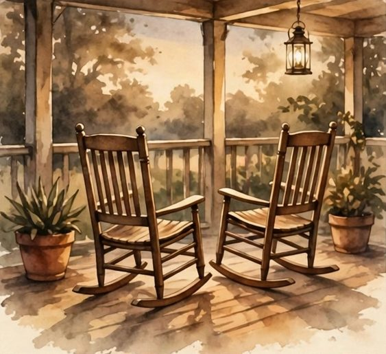
A porch at dusk, two empty rocking chairs side by side.
It happens gradually, and then a keeper notices it all at once: the listeners have begun to keep the story themselves. A daughter tells it at a table the keeper will never sit at, and tells it correctly — the pause, the beat, the car's current color. A friend finishes the keeper's sentences in the right places, not from rudeness but from tenure. The memory has quietly acquired additional keepers, the way a house acquires residents, and the original keeper's feeling, recorded honestly in the register, is not dispossession. It is relief, arriving dressed as surprise.
This is the memory's true insurance, worth more than any document the later halls will recommend. Paper burns and fades; a telling installed in another person's keeping is rebuilt every time it is told, in a house the first keeper does not have to maintain. The register keeps an informal roll of these secondary keepers — never announced, often not even known to the people on it — and consults it in hard years the way one consults a list of neighbors who hold spare keys. The room, it turns out, can be opened from more than one door now.
There is a discipline in it for the original keeper, and the house states it plainly: let them. A listener's version will differ at the edges — a detail polished differently, a pause held a breath longer — and the keeper who corrects every divergence will find the roll of keepers mysteriously shortening. Kept things multiply by being trusted. The keeper's task, once the story has taken root elsewhere, is the gracious one of becoming its first listener: sitting at someone else's table, in someone else's light, and hearing the bright hour come home by a road it built itself.
33Told in Kitchens, Mostly
Statistics are not the register's habit, but on this subject it will venture an impression: the one memory has been told in kitchens more often than in all other rooms combined. Something in a kitchen licenses the telling. Hands are busy, so eyes may rest. Steam rises, pots require a patience that matches the story's pace. Nobody in a kitchen is performing the role of audience, and the teller, relieved of an audience, tells better. The bright hour returns most easily in the kind of room where it very often happened in the first place.
Kitchens also forgive length. A story told in a sitting room is measured against the evening; a story told across the washing up is measured against the work, and work, in a kitchen, can always be found to need one more minute. Keepers have stretched the telling across whole preparations of meals, seasoning the pauses with actual pauses — a pot checked, a loaf turned — and found the story improved by the interruptions rather than broken by them. The room in the memory and the room around the telling rhyme, and the rhyme does quiet work no editor could do.
If the kept memory's room is the house's hearth, the kitchen is its embassy abroad — the place where the telling does its daily business with the world. The doctrine here is as plain as anything in the register: take the story where life already happens, not where silence is kept for it. A memory that can only be told in hush and ceremony will be told rarely, and rarely-told things thin. A memory that can hold its own beside a boiling pot will be told forever, because pots boil forever. The house approves of eternity arranged so practically.
34The Telling Wears Smooth, Not Thin
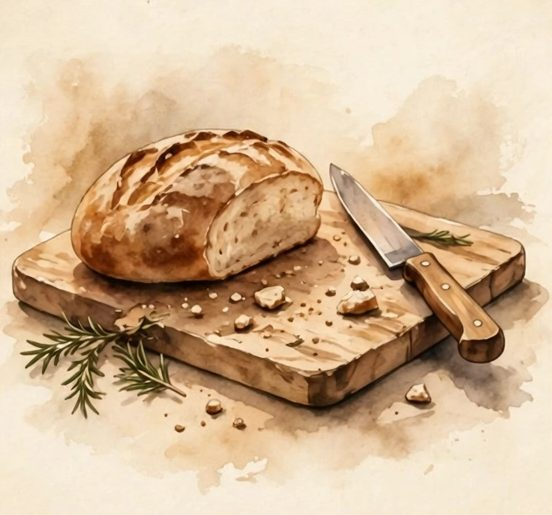
A loaf and a knife resting on a kitchen board.
The fear arrives in most keepers eventually, usually in a quiet moment after a telling that went particularly well: it has been told so many times — is it wearing out? Is the brightness a coat of varnish getting thinner with every handling? The house has considered the fear across its whole register and answers with a distinction it asks keepers to learn by heart. Some things wear thin with use: a coin's face, a joke's surprise, a pathos repeated once too often. Other things wear smooth: a step, a handle, a story. Smooth is not the enemy of bright. Smooth is what bright looks like after a lifetime of hands.
A step worn smooth has lost its stumbles, not its height. So with the telling. What repetition removes is the accidental — the false starts, the detours the hour never needed, the keeper's own noise. What it cannot remove, because every telling re-enters it, is the center: the lit room, the people, the beat that is never left out. Indeed the center is not diminished by the visits but confirmed by them, the way a hearth is confirmed by fires. Keepers who doubt this are invited to the register's simplest test: tell it once more, and watch the listeners' faces at the pause. Thin things do not do that.
The deeper error in the fear, the register finds, is the belief that the memory is a supply — of brightness, of feeling — that telling spends. The house's accounting runs the other way. The memory is not spent by use; it is a fire, and a fire is the one treasure that grows by being shared and dies only of neglect. Neglect is the enemy the later halls are built against. Use is the entire maintenance plan. The keeper may therefore tell the story the hundred-and-first time with a clear conscience: the step held. It will hold the hundred-and-second.
35When You Tell It to Yourself
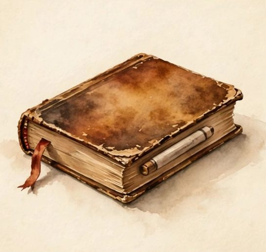
A well-worn book with a ribbon marker and a blank spine.
Some of the most important tellings have an audience of one. In the car, on a familiar road, with the radio low. In the last minutes before sleep, when the day is being filed. On a walk the keeper has taken so many times that the feet need no instructions, leaving the mind free to be elsewhere — or rather, to be in the one place it most trusts. These tellings are not rehearsals for public ones. They are visits conducted in the story's own grammar, at the keeper's own pace, and the register counts them among the room's essential traffic.
The self-telling has liberties no audience would permit. Whole stretches can be skipped without offense, because the keeper was there. The pause before the best part can be held as long as the keeper likes — some nights it is held for minutes, the keeper simply standing in the doorway of the bright hour, in no hurry to be given the rest. Details can be examined like objects taken down from a shelf. No listener's face must be managed. It is the memory at its most private pitch: a hearth with one chair drawn up, and the chair occupied.
Keepers sometimes confess these tellings with embarrassment, as if talking to oneself were a symptom of something. The house corrects the confession gently and files the tellings where they belong: under maintenance, night watch. The room is aired by them, the route kept walkable, the keeper's own copy refreshed against the day it might be needed in public or in trouble. And there is this, which the register adds in its warmest hand: of all the memory's listeners across a lifetime, the keeper is the one who has heard it most, and the one it was, in the end, principally told to.
36A Story Is a Keeping, Too
The third hall closes with the claim it has been assembling room by room: the telling is not decoration on the memory. It is one of the memory's load-bearing walls. Remove it — imagine the keeper struck silent from the day of the bright hour onward, the story never once carried out of the room — and the whole structure of keeping changes its nature. The memory would still exist, but it would exist the way an unvisited house exists: standing, furnished, and slowly surrendering to its own quiet. What is told is inhabited. What is inhabited lasts.
The evidence is in the way facts actually travel through a telling. They are not carried like stones, loose and separate. They are carried the way a story carries anything: in sequence, in faces, in one line of dialogue that arrives with its speaker attached. This is why listeners who could not pass an examination on the memory's details can nevertheless keep it — can retell it, years later, essentially whole. The story is the carrying case, built to the exact shape of the thing carried. Loose facts rattle and are lost. A fitted case can be handed across a room, a generation, a language.
So the keeper closes the hall's door with the doctrine stated as plainly as the house can state it: a story is a keeping, too. Not a lesser keeping, not a substitute for the room itself, but the room's way of traveling — out of one life and into the keeping of others, across tables and years, in a form that hands can hold. The next hall turns inward again, to copies of the memory that no words carry at all: the ones kept by smell and sound and light, in the quiet registry of the senses.
37The Senses Keep Their Copies
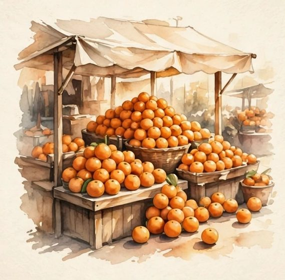
A market stall of oranges, bright in the sun.
The telling keeps the words of the memory, and the words are not the whole of it. Beneath the story, older and quieter, the senses hold their own copies of the bright hour — partial, wordless, and in several respects more durable than the text. A smell can open the room in a market street. A quality of light can open it in a stairwell. The copies are not summaries of the story; they do not answer to it. They are separate holdings, kept in separate registries, each capable of admitting the keeper to the room by its own door.
This hall walks the registries one by one, and the keeper asks the reader to notice the courtesy of the arrangement. The senses do not compete with the telling, and they do not correct it. When the story's car changed its color across the years, the smell of that summer did not change with it; when the words for an afternoon ran out at a table, the taste of its fruit remained on file. A memory kept in one medium only is a book in one copy. The one memory is kept in at least six, and the house counts that redundancy among its deepest structural kindnesses.
There is also this: the senses' copies are the ones the keeper cannot lose on purpose or misplace by neglect, because they are not stored — they are carried in the equipment itself. The nose, the ear, the skin keep their pages the way hands keep their grips, without being asked and without filing reports. The hall that follows is therefore less a tour of wonders than a reading of the register's quietest ledger: what was kept of the bright hour by the parts of the keeper that never learned to speak.
38The Smell Arrives First
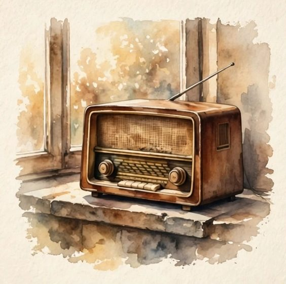
An old radio on a windowsill, its dial resting at one station.
Of all the copies in the senses' registries, smell's is usually the swiftest to arrive and the hardest to argue with. It does not knock. A doorway of scent — rain beginning on hot pavement, a particular woodsmoke, the green breath of a riverbank, a soap that has not been manufactured in thirty years — and the keeper is inside the room before any decision has been taken, before the mind has even located the door. The story takes minutes to tell. The smell's copy admits its keeper in the time a breath takes, and it admits them entire.
Keepers trust this copy in a way they trust no other, and the register understands the trust. Words are revised at every telling; faces soften; the order of events slips politely and is forgiven. The smell returns un-revised, the same each time, making no case for itself. It is the least literary part of the memory and the least deniable — a fact the keeper can stand on when the tellings have wandered further than usual. Whatever else has been re-cut over the years, the summer still smells the way it smelled. The suit changes. The weather in the room does not.
So the house gives this copy the first chair in the hall, ahead of prouder faculties, and instructs keepers to honor its arrivals. When the scent comes — in a market, in a stairwell, in the opened door of a bakery in a foreign city — the correct response is not analysis. It is attendance. Stand in the doorway half a second longer than the errand requires. Let the room be entered by the road it chose. The register's note on the subject is brief and final: some doors are for walking through slowly, and this is the oldest of them.
39A Song Opens the Door
A song is a key cut by strangers. A few bars of the music that was in the air during the bright hour — from a radio in another room, from a passing car, from a wedding band three streets away in the present day — and the kept room reassembles itself around the keeper with embarrassing completeness: the light, the weather, the faces in their places. The keeper did not choose the key and cannot schedule its turning. Songs belong to everyone, which is precisely their power. They are the only keys to the room that the whole world carries copies of, in its pockets, whistling.
This public ownership makes the song the least governable of the senses' copies, and the house does not pretend otherwise. The smell, at least, stays home in its markets and kitchens. The song travels. It will find the keeper in a dentist's waiting room, in a taxi in another hemisphere, at the exact wrong moment in a serious meeting — and open the door with the same unhurried authority, while the keeper's face does things their colleagues will ask about afterward. The register records these ambushes without disapproval. A room that can be opened from anywhere is a room that cannot be lost in any one place.
The keeper's wisdom, such as it is, is hospitality toward the key. Do not flinch from the song, and do not chase it either; both errors treat the door as a problem. Let it play. Let the room be visited for the length of a chorus, in the middle of the ordinary day, among strangers who are having their own doors opened by the same tune. Of all the copies the senses keep, the song's is the most social — proof that the bright hour was lived in a world full of other people's bright hours, all of them, somewhere, set to music.
40The Taste of That Summer
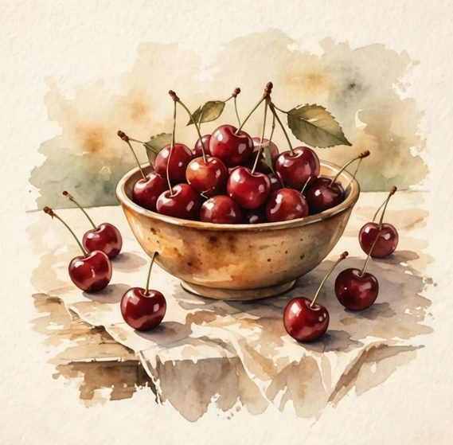
A bowl of cherries on a summer table.
Taste keeps the most dated copy in the registry, and the most honest about its own limits. The exact flavor of a fruit in a particular summer — cherries from one tree, plums still warm, the bread from one oven in one year — belongs to that year in a way the smell, say, does not. The tree is gone or older; the tongue doing the tasting is older too. Keepers who chase the copy discover its terms quickly: this one cannot be re-run at will. It can only be approximated, and the approximation arrives carrying its own news about time.
And yet the approximation is not nothing, which is the room's real subject. One bite of the right fruit, in the right season, and the table of the bright hour is half set again — the light going, the plates out, the company implied by the flavor the way a chord implies a key. The copy is partial and knows it, and its partiality is a form of accuracy the other senses might envy. The taste does not pretend the years away. It admits them in the same mouthful that admits the summer, and the keeper tastes both, and finds the mixture bearable, even right.
The register therefore files taste's copy under a special heading: the honest witness. It will not testify beyond what it knows. Where the story has quietly improved a detail, the tongue files no protest, but it files no confirmation either. What it confirms, when it can, it confirms completely — this sweetness existed; this table was real; this is what that summer cost and what it paid. A keeper building a case for the bright hour, in some future year of doubt, could do worse than begin the evidence with a bowl of cherries, eaten slowly, in season.
41Light at a Certain Angle
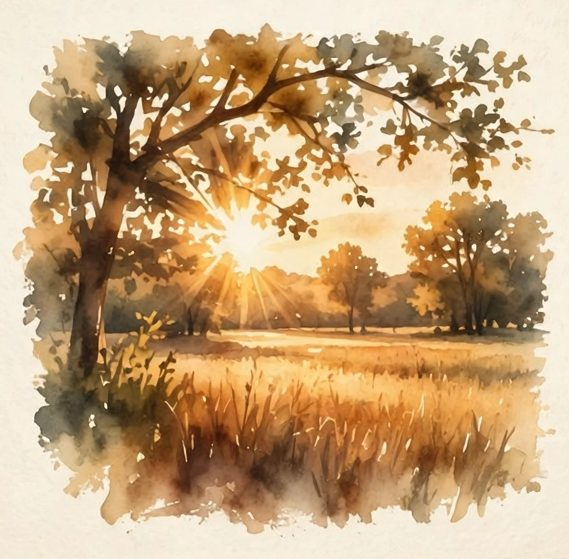
Low sun through the trees at the edge of a field, the light arriving sideways and gold.
The memory keeps its light the way houses keep the hour they were built for. There is an angle — late in the day, the sun coming in low and sideways — at which the whole scene stands exactly as it was, and the keeper has learned not to argue with it. Nobody in the memory posed for that hour. The light was simply passing through the trees at the edge of the field, and it has gone on passing, in the same direction, every time the room is entered. Other hours belong to other afternoons. This one belongs to the kept room, and it is not transferable.
It explains why the keeper distrusts noon. At midday the room can be visited and described, the furniture named, the distances measured — and nothing happens. Then the angle comes round, in recollection as in the year, and the ordinariness catches fire quietly: a shoulder of light on the grass, dust or midges or whatever the air held, all of it lit like something meant. The memory is not more beautiful than it was. It is only seen under its own conditions, the way certain paintings hang in one spot of the gallery because the light there is the light they were painted in.
Strangers, hearing the telling, sometimes ask what the light was like, and the keeper answers honestly: like light. The angle is the thing, and the angle cannot be posted in a letter. But anyone who has a kept room of their own knows the hour meant — the hour when the past stops being information and stands up in its own weather. The keeper does not chase it or schedule it. It arrives when it arrives, at its own slant, and the whole house tilts very slightly toward evening, and for a moment the field's edge is exactly where it always was.
42A Voice, Heard from Another Room
Some copies the senses keep are not of faces or of weather but of sound through a wall. The voice in the kept memory is seldom saying anything the keeper can repeat; it is heard the way it was always heard in that house, from another room, mid-sentence, occupied with something else. The words are lost and were probably ordinary — a call, a comment, a laugh arriving ahead of its reason. What remains is the register of it: pitched as it was pitched, unhurried, at home. The ear kept the tune of the voice and let the speech go, and the house counts that a fair exchange.
It is worth noticing how much of the memory is overheard rather than witnessed. The keeper was often in the next room of that day — shelling something, reading something, half elsewhere — and the senses, unsupervised, did the keeping. A voice through a doorway carries differently than a voice addressed to you: it is not performing, not explaining itself, and so it arrives unedited, in its working clothes. Perhaps that is why it has lasted. What was meant for the keeper has been revised a hundred times in the telling. What was merely overheard has stayed as it was, because nobody thought to improve it.
On quiet evenings the keeper still listens for it, without sadness exactly — the way one listens for a familiar step in a house now differently occupied. The voice is not expected to answer. Its having been heard, once and daily, is the whole of the entry in the register. And sometimes, in an actual corridor of the present, a stranger's voice at the right pitch will open the door an inch: not the same voice, never the same, but the same key turning, briefly, in a lock the keeper had forgotten the house still had.
43The Texture of the Day
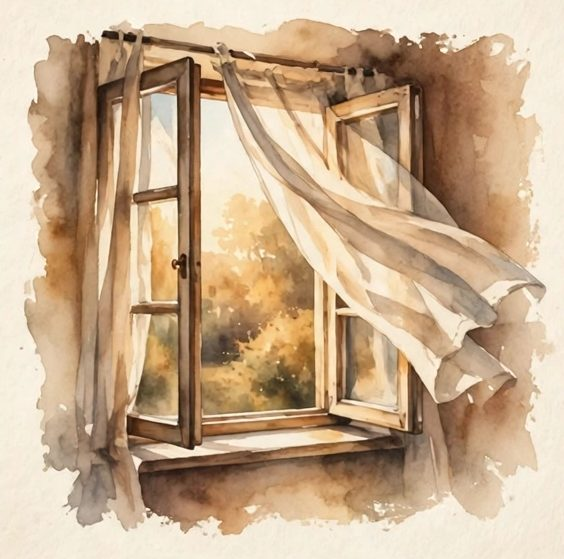
An open window, the curtains lifting in a slow breeze.
Ask the hands what the day was made of and they answer before the mind has finished the question. The kept memory has a texture: the weight of a curtain's hem moving in the breeze from the open window, cloth worn thin in one place, sun warm through it. The keeper cannot produce this texture on demand, the way a colour can be named or a tune hummed. It comes back whole or not at all, usually when the actual hands are busy with something similar — a cloth, a curtain, a hem — and the present texture and the kept one coincide for a second like two sheets of glass aligning.
Texture is the sense least flattered by description, and so its copy may be the most honest one in the room. The eye edits; the ear embellishes; but the hand simply reports what it held, and it held a great deal that day without consulting anyone. The keeper, writing the memory down, finds the words run out precisely where the texture begins, and has learned to leave a space there — a paragraph of touch that cannot be spelled, only pointed to. Listeners who were there will fill it from their own hands. Listeners who were not will understand that something is being kept politely out of the reach of language.
It is a comfort, in its way, that so much of the keeping happened below the level of attention. While the mind was deciding what the day meant, the hands were memorising what it felt like, and their minutes were the more accurate. Years later their report is the one that cannot be argued with. A colour can be misremembered; a tune can drift; but the specific give of that cloth under the thumb arrives with its old authority intact, and the keeper, feeling it, is briefly not remembering the day at all — but standing in it, holding the curtain aside.
44Weather Is a Filing System
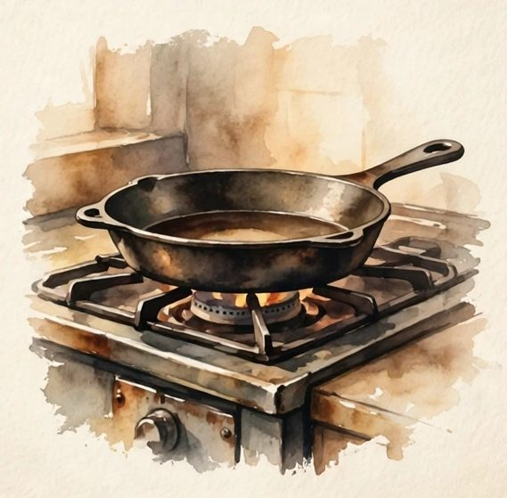
A cast-iron pan on the stove, heavy and patient in the kitchen light.
The keeper no longer bothers to date the memory by the calendar; the weather files it faster. Say rain at evening, say the first cold morning, say heat sitting in a kitchen with a cast-iron pan ticking on the stove, and the kept room opens at the right page without being asked. Whole years, in the house's archive, are stored under their weather rather than their numbers, and the arrangement embarrasses nobody. A date can be looked up and means nothing. A weather arrives in the body first — in the shoulders, in the breathing — and by the time the mind has caught up, the memory is already standing in the room.
This is why forecasts unsettle the keeper more than they should. Tomorrow's promised rain is also yesterday's, filed and kept, and the two will be confused at the door like guests with the same coat. The keeper does not mind. Weather was never a backdrop to that day; it was one of its participants, and participants are entitled to be greeted whenever they reappear. The smell of rain on dust, the particular silence after thunder, heat on a windowsill at noon — each holds a drawer of the archive, and each drawer, opened in any later year, lets the same hour out.
People who share the memory file it the same way, which is how the keeper knows the system is not private eccentricity but ordinary human shelving. At the telling, nobody says the year first. They say: it was the summer the roof leaked, the winter of the early dark, the wet week. Then the date can be attached afterwards, like a label tied on with string, correct and unimportant. The weather was there before the calendar and will outlast it in the keeping, because the body learned its seasons long before it learned to count, and the body does the filing here.
45A Place on a Map, a Place in the Chest
The memory has an address, and the keeper can find it on a map with one finger, the way anyone can. But the geography that matters is not the printed kind. In the chest the place sits at a particular depth and to one side, near other places that are nowhere near it on any map — a grandmother's street adjoining a schoolyard in another country, the field beside a house demolished before the keeper was grown. The senses drew this atlas years ago and have never once consulted the official one. Distances in it are measured in how quickly the throat tightens when a name is spoken.
The keeper has been back, of course — most keepers go back once, to check. The place was smaller, or busier, or painted; strangers had it now and were using it correctly for their own lives, which felt both proper and faintly impertinent. The visit did not damage the memory, and the keeper is glad to report it, because keepers fear that journey more than almost any other. What stands in the chest is not the place as it is but the place as it was when it was theirs, and the two addresses, it turns out, can be held at once without either evicting the other.
So the house keeps both maps and labels neither of them false. One is for travelling, should travelling ever be needed; the other is for arriving, which happens daily and requires no luggage. When the keeper says the name of the place aloud — to a listener, to the room, to no one — it is the second map that answers. The coordinates there are not degrees but relations: uphill from the water, two fields past the voice from the other room, in the light at the certain angle. Anyone who kept the same day could navigate by them, and nobody else needs to.
The Memory Desk
One desk receives all correspondence for this house — questions, corrections, and word of any memory you keep: where it lives, who else is in it, and how it is holding up against the years. It is read in the order it arrives.
46Copies in the Hands
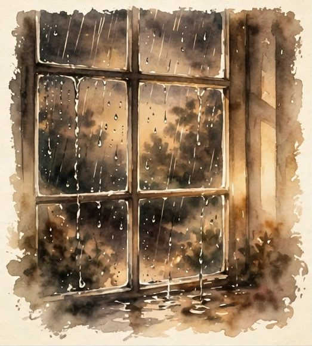
Rain on a windowpane at evening, the drops gathering the lamplight.
The hands were issued their own copies on the day itself, without being asked, and they have kept them in their own filing system, which is grip and gesture. A palm remembers the cool of a windowpane with rain on the other side of it; fingers remember the exact give of a latch, a cup's handle, a shoulder passed in a doorway. The keeper discovers these copies by accident, years later, in the middle of unrelated tasks, and each time the discovery has the same modesty: the hands simply do, without commentary, what they did then, and the day opens.
Rain on a windowpane at evening is the plate the house would choose for this room, and the choice is the hands' as much as the eyes'. To a child — and the keeper was nearer childhood then — rain on glass is a thing touched as much as seen, followed with a fingertip down the inside, racing drop against drop. The grown keeper no longer races them, but the fingertip still knows the route, and on wet evenings the knowledge stirs, small and exact, a copy kept in the skin of the hand itself, where no damp has ever reached it.
It comforts the keeper that the copies are distributed so widely through the house. If the eyes' version fades, the hands still hold theirs; if a name is lost, a grip remains. The keeping was never entrusted to one sense alone, and the redundancy was not planned — it is simply how a day gets carried by a whole person rather than by a clerk with a notebook. So the hands go on with their work in the present, shelling, mending, holding, and every so often they pause, recognising an old weight in a new object, and the room is entered without the door being touched.
47What the Ears Kept
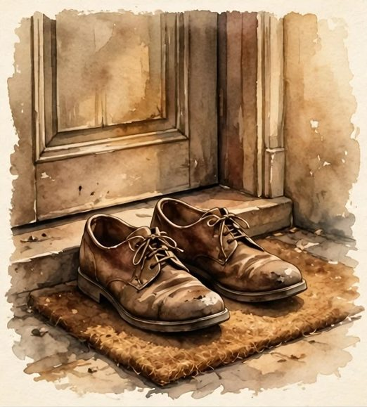
A pair of worn shoes standing by a door, heels down, side by side.
The ears kept more than the voice. They kept the house's small percussion: a kettle deciding to boil, a chair leg on boards, steps on a path in shoes that have since been worn out and thrown away. Those shoes stand by the door in the plate, and in the ears' copy they are still audible, crossing the yard at their own pace, neither hurrying nor lingering. The keeper is always slightly surprised by how much of the register is sound at floor level — the level at which a life is mostly lived, below the speeches, underneath the announcements.
Some of the sounds have stopped existing anywhere except in the keeping. The gate's note, the particular ring of that stove, the way weather sounded against that roof — the world has redecorated, and those instruments are gone. The ears' copies are now the only performances left, and they are not played on request. They arrive unbidden, often in a quiet room in an unrelated year, and the keeper has learned to stop whatever the hands are doing and give the recital its moment. It lasts seconds. It is always complete. A whole season can be held in the sound of a door closing at the right distance.
Notice that the ears never kept the important speeches, if there were any. They kept the margins: someone humming while working, a laugh from the yard, the voice from the other room, rain beginning on a window at evening and nobody remarking on it. The house approves the selection. What was said for the record has mostly joined the record; what was said for nothing, in passing, at floor level, is what a life actually sounded like. The register of the ears is therefore the least formal document in the house and, the keeper suspects, the one future keepers would learn the most from.
48Every Sense Signs the Register
At the end of the hall the house holds a small ceremony of accounting: each sense is brought forward, in turn, and signs the register of the kept memory. Smell signs first, in its quick, unauthorised hand. Then taste, then the ears with their floor-level entries, then the hands, then the eyes, whose signature is the largest and, everyone politely agrees, not necessarily the most reliable. The keeper witnesses the page and closes the book. The memory is now kept in five copies, in five different scripts, no two of which agree in every particular — and the house calls that not a problem but the definition of kept.
The disagreements are recorded in the margins, where they belong. The eyes insist the afternoon was brighter; the hands report the cloth was rougher; the ears hold that there was music, or weather, where the eyes remember silence. The keeper does not convene the senses to settle it. A memory that survived in one copy only would be a fragile thing, one damp season from illegibility. Kept five ways, in five temperaments, the day can lose a copy and still be read by the others. Redundancy, in this house, is not inefficiency. It is the whole method, though nobody here calls it a method.
And there is a sixth signature, the keeper has noticed, though it belongs to no single sense: the signature of the body at rest in a familiar place, the shoulders lowering half an inch when the room is entered in memory. No one taught it to sign. It signs anyway, underneath the others, in a hand so plain it is easy to miss. On days when the five copies quarrel and the telling stumbles, this sixth entry steadies the page. The day was real; the body was there; the register is complete. What more, the keeper asks the empty hall, has any archive ever honestly offered?
49What Time Does to It
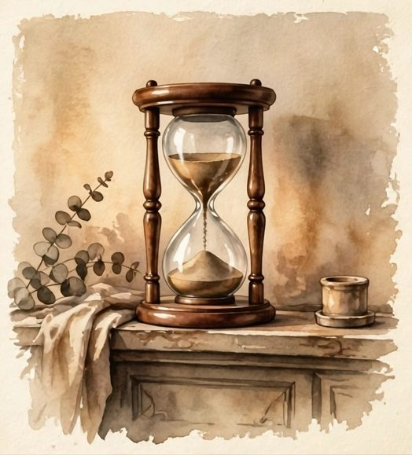
An hourglass on the mantel, its sand settled warm in the lower glass.
The hall of time begins with an admission the house makes early, so that nothing later rests on a pretence: time does things to the kept memory, and it has been doing them since the first year. An hourglass stands on the mantel of the kept room, and the keeper chose it deliberately — not because the sand measures the memory, but because it measures the keeper, who is the medium the memory is kept in. The day itself is not ageing. The hands that carry it are. Everything in this hall follows from that simple arrangement, and the house finds it clarifying rather than sad.
Time's first work is subtraction, and it is not the vandal it is accused of being. It takes the errands out of the day, the waiting, the weather that merely passed; it takes the names of people who crossed the yard once and meant nothing by it. What it rarely touches, in a kept memory, is the load-bearing hour. The keeper, reviewing the register across the years, finds the losses mostly reasonable, like a garden's. Some of them were even mercies, though the house is saving its word about mercy for a later room in this hall, where it belongs.
Time's second work is stranger and less discussed: it adds. It lays the later years' understanding over the day like a second coat of varnish — not falsifying the grain, but deepening the colour of it in ways the keeper will examine, honestly, before this hall is done. For now the admission stands at the door: the memory the keeper carries today is not the one carried at twenty, though it is recognisably the same day, the way a face is. The hourglass is turned, the sand runs, and the house keeps both the day and its keeper under the same roof, changing at different speeds.
50Edges Soften, the Middle Holds
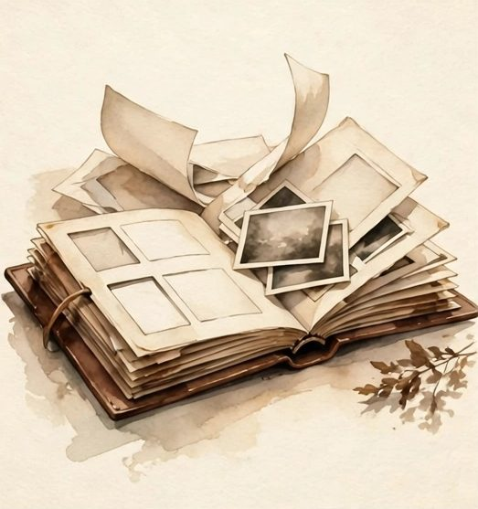
A photograph album lying open, some of its pages worked loose.
What softens first are the edges: the exact hour it began, the sequence at the margins, who arrived before whom. The keeper used to apologise for this in the telling, and has stopped. Edges are where a memory meets the rest of the life, and the traffic there is heavy; of course they wear. The photograph album in the plate has pages worked loose at just those places — the beginnings and endings of gatherings — while its middle leaves sit flat and tight. The house recognises the pattern without alarm. It is the shape of every honestly carried thing: handled most where it joins the world.
The middle holds. Whatever the day was about — and the keeper has never needed a committee to know — stands where it stood, in the same light, at the same angle, with the voice from the other room still in it. Around it the detail thins a little more each decade, like the pile going down on a much-used rug, and the keeper's rounds in this hall consist mostly of confirming that the centre is unmoved while the fringe does what fringes do. It is a peaceful inspection. Nothing in the middle has ever once been found loosened by a year that loosened everything around it.
So the house advises its keepers, in the margin of this room, to stop defending the edges as if they were the memory. A telling that begins "it was a Thursday, I think, or the rain came first" loses nothing that mattered; hedges of that kind are the sound of honesty at work. The listeners who love the day will wait for the middle, where it is kept. And the keeper who has made peace with the fringe finds the telling easier, the way a walk is easier once you stop apologising for the mud on the path's edge.
51A Detail Is Borrowed from Another Year
Somewhere in the kept memory there is a detail that does not belong to it: a coat, a song, a colour of door, imported from another year and fitted so neatly that only the house's own audit ever notices. The keeper, discovering one, used to feel accused — as if the register had been caught in a small forgery. The house has since instructed otherwise. Days that are carried together lend each other their furniture. The borrower day was rich; the lending day had a gap at exactly that size. The detail crossed the corridor between them in the dark, years ago, carrying its pillow.
It matters less than the keeper once feared, and it is worth saying why. The borrowed detail is false to the date and true to the household: it happened, in that house, to those people, in that weather of life — merely on a neighbouring occasion. The register corrects it in pencil when it is found, and sometimes, finding it late, lets it stand with the correction noted beside it, the way an old map keeps the surveyor's amendment in the margin rather than pretending the coastline moved. Honesty, in the house's practice, is a marginal note, not a bonfire.
Listeners must be spared the full audit, in the keeper's opinion. A telling interrupted at every seam to confess which coat belonged to which winter would be accurate and unreadable, a register recited aloud instead of a day handed over. The keeper tells it whole, as it is kept, and keeps the pencilled margins for the house. If challenged — and someone who was there may challenge, holding the true coat's year like a receipt — the keeper concedes at once and cheerfully. The day survives the correction. It always has. What the day cannot survive is being doubted at its middle for the sake of its edges.
52The Memory Ages with Its Keeper
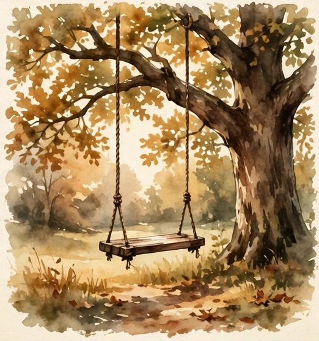
A large tree at the field's edge, an old swing hanging from its lowest branch.
The tree in the plate has an old swing hanging from it, and the house chose the image carefully: the swing has not changed its rope or its branch, but nobody who once flew on it would now sit the same way, and the tree has thickened around the rope's old arguments with the bark. So with the kept memory. It ages with its keeper, at the keeper's pace, in the keeper's weather. At twenty it was carried as adventure; at forty as evidence; later — the keeper writes this in the register without flinching — as company. The day did not alter its meaning. The carrier's life kept arriving, and meanings are assigned by the living.
This is not a complaint the house entertains, the idea that the memory should have stayed young so the keeper could visit a fixed exhibit. Fixed exhibits are for houses nobody lives in. A kept memory is furniture in use: the chair's seat takes the shape of its sitters, and the shape is not damage. When the keeper tells the day now, the telling has the keeper's present voice in it — slower, surer of what to leave out — and listeners who heard the earlier versions are hearing, honestly, two true things at once: the day as it was, and the life as it has gone.
The keeper has come to prefer it so. A memory that never aged would be a stranger's heirloom, impressive and unusable. This one has grown up in the same house as its keeper, shared the draughts and the redecorations, and bears the honourable dents of the corridor. When the two of them are old — the day and the one who carries it — they will still be recognisable to each other, which is more than most pairs manage. The swing hangs on. The rope and the branch have made their peace. The register enters it under continuance, the house's favourite category.
53It Is Not a Photograph
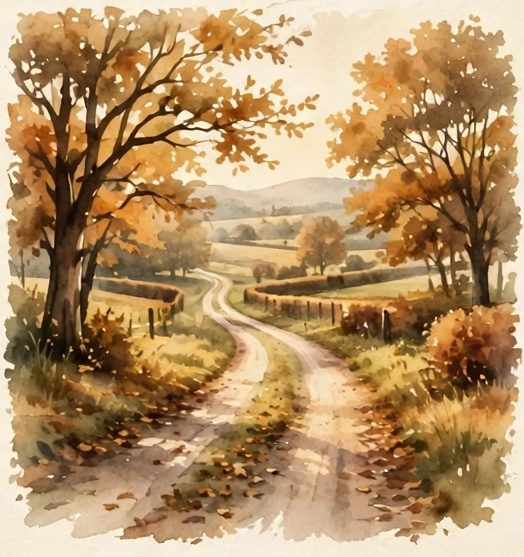
A country road in soft autumn light, running out of sight between hedges.
The house is firm on this room's title, because keepers keep arriving at the desk with the same quiet grief: the memory will not hold still to be checked. It is not a photograph. It does not present itself all at once, flat and simultaneous, with the edges square. It comes as weather comes and as roads come — in sequence, at walking pace, some of it in fog. The country road of the plate is not hiding its distance; it is simply longer than one glance. The keeper who stops demanding a snapshot finds the journey itself is the exhibit, and always was.
A photograph can be enlarged until its grain gives out; the memory enlarges differently, by attention, and what it yields at magnification is not detail but significance, which is a different substance and keeps worse in albums. The keeper has also noticed the reverse discourtesy: photographs, consulted too often, begin to evict the memory they were meant to serve, until the day is remembered as the picture of the day. The house does not banish photographs — they have their own hall, later — but it keeps them in their place, which is evidence, and keeps the memory in its place, which is the road, walked.
So the keeper has made peace with the blur at the turns and the faces that will not resolve, and walks the road instead of framing it. Some stretches arrive with absurd clarity — a hand on a gate, exact and sunlit — and the next bend is all soft edges and the sound of someone ahead, out of sight. That distribution, the keeper now believes, is not the memory failing at photography. It is the memory succeeding at being a memory: a kept road through a kept day, in autumn light, with the hedges high and the destination less important than the house it leads back to.
54Some Colors Deepen
Subtraction is not the whole of time's work; every keeper's register shows entries in the other column. Some colours deepen. The red of a door, the green of that field at that hour, the particular gold of the light — these have not faded with the years but saturated, the way a scarf folded away in a drawer is found, decades on, deeper in its dye than memory's paler witnesses reported. The keeper once suspected this was simple error, kindly meant. The house has taught a more interesting suspicion: that attention is a dye, and every telling dips the cloth again.
Not everything deepens, and the pattern of what does is itself information. The colours that saturate are the ones the day was truly lit by — the emotional weather rendered visible. Backgrounds stay thin, faces go softly general, but the door is redder than red and the field outgreens every field since. The keeper reads this not as the memory lying about paint but as the memory keeping its accounts in the currency that mattered: not what things looked like to a camera, but what they looked like to the person who was busy, at that exact hour, being changed by them.
The keeper's practice, arrived at slowly, is neither to correct the colours down nor to boast of them upward. They are the day's true palette as kept, and a kept thing is entitled to its own saturation. When a fellow witness says the door was brown, the keeper does not reach for the register; both colours are entered, and the brown is probably right about the paint. But the house knows which red its keeper has been carrying all these years, and why, and it warms the room to exactly that shade when the telling begins — which, the keeper suspects, is a door's whole ambition.
55The Order of Events Slips, Politely
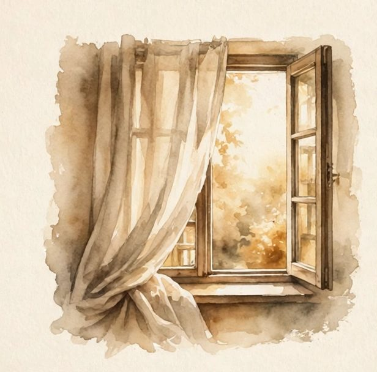
A faded curtain in a sunny window, its pattern gentled by the light.
Of all time's edits, this is the most courteous. The order of events slips — politely, as a faded curtain slips its rings, one at a time and without tearing anything. Did the rain come before the visitor, or after? Did the song start the laughter, or did the laughter summon the song? The keeper once kept a chronology and defended it; the chronology is now kept the way train tables from a closed line are kept — fondly, and without any expectation of service. The events themselves are all still in the room. They have merely stopped queuing in single file.
A day, the keeper has concluded, is not a story until somebody makes it one, and the making is where the order gets decided — by the telling, not by the clock. Each telling lays the events in the sequence that serves the light best, and the next telling may deal them slightly differently, the way the same hand of cards is played by an older player. Nothing in the room protests. The laughter keeps its cause flexible and its effect exact, which the house considers the correct distribution of certainty: what happened is negotiable at the edges; what it felt like never is.
So the keeper no longer opens the telling with the hour and the sequence, the way a deposition opens, but with the light and the weather, which have never once been found in the wrong order. Listeners settle sooner. The events arrange themselves around the fire like guests who know the house, each taking a chair as it comes free, and nobody checks the invitations against a list. If the visitor came before the rain, the story knows it by the ending. If after, the ending knows that instead. Either way the day is told whole — order being only the ribbon, and the parcel being the point.
56What the Years Added
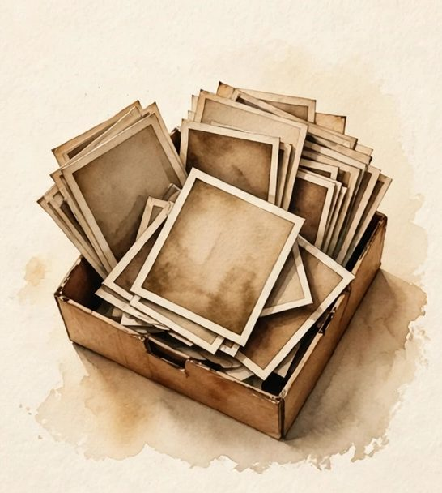
A box of unsorted photographs lying face down, waiting their turn.
The audit of additions begins with understanding, which arrived late and keeps arriving. The keeper now knows what that day cost the people in it, what it set in motion, which of its sentences turned out to be load-bearing for the whole following life. None of that was visible from inside the day; it has been added since, entry by entry, as the consequences reported back. The house does not call this contamination. A kept memory is not a sealed jar but an account still open, and the years are entitled to post their interest, provided the original entries are never overwritten — only annotated.
Other additions are smaller and stranger: faces of people met later, recognised backward into the day because they belong to its story's continuation; a song heard years afterwards that fits the afternoon so well it has been naturalised; the box of unsorted photographs in the plate, some of them face down because the keeper already knows they are from other days wearing this day's clothes. The register allows citizenship to a few of these, and the keeper is strict about the border: an addition may live in the memory's house, but it is entered in the margin as a resident, never as a founder.
And yet — the keeper writes this in the room's last paragraph and underlines nothing — some additions have become indistinguishable from the day, and the house has stopped trying to separate them, the way a river stops distinguishing a joined stream. The understanding is part of the memory now; remove it and the day would be thinner than the day deserves. The audit therefore closes with a ratio rather than a verdict: so much given, so much lent, so much added, so much deepened. The keeper signs the account as it stands, additions and all, and the house files it under honest.
57What the Years, Mercifully, Took
This room is kept quieter than the others, and the keeper asks visitors to lower nothing but their certainty. The years took some things mercifully. They took the sharpness off an embarrassment that once could stop the keeper mid-sentence in an unrelated year. They took the exact wording of a hurt that was, at the time, memorised like a lesson. They took a fear that had been standing in the day's corner, and when the keeper looks for it now — on the shelf where it was kept, in good light, swept — there is a clean space and no forwarding address.
The house is careful here, because mercy can be confused with denial, and they are not the same tenant. Denial barricades a room and swears it is empty. Mercy simply, over years, carries certain things out — not hidden, not buried in the garden, but genuinely lightened, the sting drawn by time the way a splinter works out. What was taken is not forgotten, exactly; the keeper can still describe the embarrassment's outline and the hurt's address. What is gone is their voltage. The register records the removal without commentary, in the same hand as the additions, because both are time's honest bookkeeping.
Keepers sometimes confess, at this room's door, a small disloyalty of feeling: they are glad. Glad the day no longer hurts at its old address; glad the embarrassment is now a story that raises the laugh it once prevented; glad the corner stands empty and swept. The keeper absolves them in advance, on the house's authority. Gratitude for a mercy is not betrayal of the day. The day, being kept whole and kindly, does not require its keeper to go on holding the hot end of it. Some things the years took were carried long enough. Setting them down is also a form of keeping.
58An Honest Memory Admits Its Seams
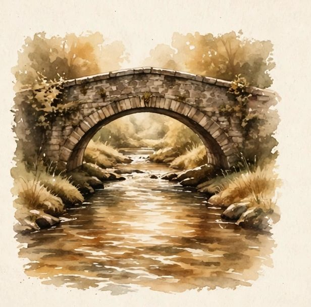
A river running under an old bridge, slow and brown and certain.
A seam is where two true pieces were joined, and the joining shows. The kept memory has them: the place where the keeper's account meets a fellow witness's and the stitching is visible; the join between the day as lived and the day as since understood; the mend where a borrowed coat hangs in the wrong winter, noted in pencil. A dishonest memory conceals its seams and calls the concealment accuracy. This house does the opposite, as a matter of standing policy: the seams are pointed out during the telling, lightly, the way a river's keeper points out where the old bridge was repaired — with pride in the repair.
The reason is structural, not confessional. A thing with no visible seams asks to be believed whole, and whole belief is heavy; it cracks along the hidden joins when life leans on it. A thing sewn openly can be trusted precisely where it was mended, because the keeper knows the thread. Listeners, too, relax at the sight of a seam honestly shown: it tells them the teller is keeping a day, not defending a monument. The keeper has watched suspicion leave a room at the words "that part I've stitched from two years, I think" — the small admission acting as a window opened.
So the register's final standard for this hall is a garment standard: the memory is well kept not when it looks new but when it wears like something loved and repaired by its owner's own hand. The seams are the signature of the keeping. Let the edges soften, the colours deepen, the order slip and the seams show; underneath all four, the middle holds, and the keeper can put a hand flat on the joinery and say, without raising the voice: it has been carried a long way, and the stitching is mine, and it holds. The house asks no more of any honest memory than that.
59It Is a Kept Thing, Not a Kept Fact
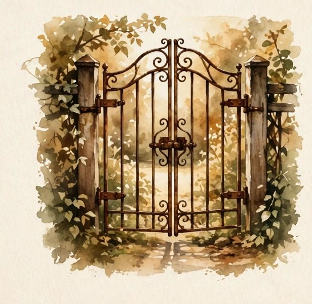
A garden gate rusted kindly at the hinges, standing half open.
The hall's doctrine, having been illustrated for ten rooms, is now entered in the register in its plain form: the memory is a kept thing, not a kept fact. A fact is the same in every hand that holds it; a kept thing is shaped by the holding, the way the garden gate in the plate has been shaped by its own hinges — rusted kindly, swinging true only for the hand that knows its lift. The keeper does not offer this as an excuse for error. It is a classification. Facts are kept in archives. Things are kept in houses, and houses answer to different, older laws.
This is why two honest keepers of the same day can disagree in the corridor without either being dismissed as a vandal of the truth. Each kept the thing; neither kept the fact, because the fact was never the portable part. The keeper has stopped attending the old argument about whose version is correct, and attends instead the better one: whose keeping has carried the day further, gentler, with its warmth better conserved. Correctness is an archive's virtue. Carriage is a house's. The register honours both under their own roofs and declines, politely and permanently, to confuse the jurisdictions.
The keeper therefore tells the day as a thing is told: by handing it over, weight and warmth included, and letting the listener's hands adjust. If the listener asks, is that exactly how it was, the keeper gives the house's answer, which has taken fifty years to phrase: it is exactly how it is kept. The gate swings; the hinges complain in their kind rust; the garden beyond is the same garden. A kept fact could be checked and closed. A kept thing must be carried and opened, daily, by someone — and the whole doctrine of the house is contained in the difference between those two sentences.
60Truer Than Accurate
The hall closes with a sentence the keeper has been approaching for twelve rooms and now says standing in the doorway, lamp lit behind, in the kept room's own light: the memory, honestly kept, can be truer than accurate. Accuracy is a measure against a record. Trueness is a measure against the life — against what the day did, what it still does, and what it would be a betrayal to tidy. The keeper knows the distinction sounds like a licence, and has spent this whole hall showing the locks on it: pencilled margins, seams displayed, borrowings confessed, witnesses honoured. The licence is earned, or it is nothing.
Consider what the accurate version would actually contain: the date, the order, the verified coats, the colours corrected down to their paint, the edges defended, the seams concealed, the additions audited out. It would be a flawless account of the day and it would be unrecognisable as the day, the way a list of a house's materials is not the house. Everything that made the hour worth keeping lives precisely in the strata accuracy would strip: the saturation, the softened fringe, the light arriving at its own angle. The keeper, offered the exchange — accuracy for trueness — has made the house's choice, and recorded it without a moment's hesitation.
So the hall's last entry returns the memory to its keeper in good order, weathered honestly and entirely recognisable. Time will go on with its subtractions and its varnishes; the edges will soften further; a colour or two may deepen past all paint; and the keeper will go on signing the register in this hall's hand — kept, not catalogued; carried, not cross-examined. The door of the hall closes on the sentence it opened with, now proven at walking pace: an honest memory admits its seams, and is not one stitch less true for them. What you carry, you keep.
The Memory Desk
One desk receives all correspondence for this house — questions, corrections, and word of any memory you keep: where it lives, who else is in it, and how it is holding up against the years. It is read in the order it arrives.
61The People in It
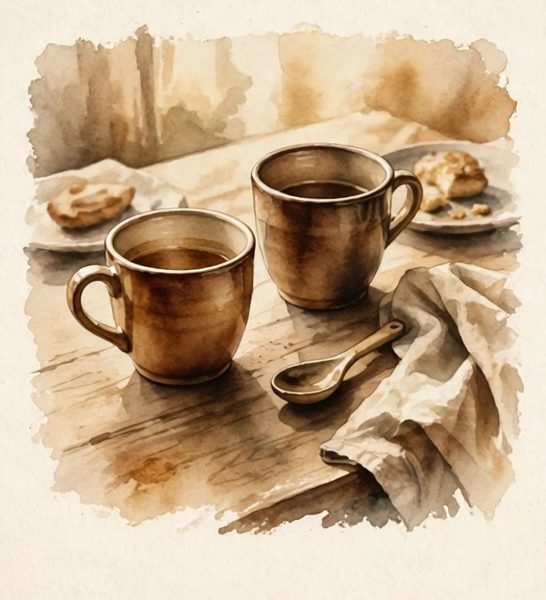
Two cups left on a table after the talk, the chairs still warm from it.
The memory is never yours alone, however private it feels when you take it down and look at it. There are other people standing in it, in the good light, exactly where they stood that day — at the table, at the door, halfway through a laugh. They did not agree to be scenery. They were living their own hour, which happened to overlap with yours, and the room holds them as they were: mid-sentence, mid-gesture, entirely themselves. The keeper is strict on this point. The kept room is not a portrait gallery with one sitter. It is an inhabited hour, and everyone in it has tenure.
This is why the memory resists being carried like a possession. A possession can be polished, lent, locked away; the people in the room cannot. They keep their own counsel inside it. One of them is funnier than your telling admits. One is quieter, and the quiet was load-bearing. One was already halfway out of the story, thinking about the road home, and that too is part of what the room honestly holds. The keeper writes their names in the register without rank or order. In the kept room there is no supporting cast. There are only the people who were there, which is to say: the memory itself, wearing faces.
So the keeping has a courtesy built into it. When you tell the memory, you tell it with the people left whole — not trimmed to fit your part in it, not flattened into the helpful friend, the stern elder, the comic uncle. They were more than their errands in your hour, and the room knows it even when the telling simplifies. On the keeper's rounds, each of them is greeted as a resident, not recalled as a detail. The memory lasts, perhaps, precisely because it is crowded. A room with one person in it can go echoing and strange. A room full of people stays warm.
62Someone in It Has Grown Old
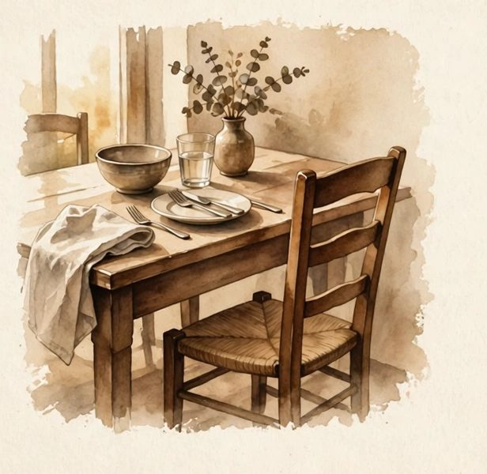
An empty chair at a set table, waiting in the evening light.
Someone in the memory has grown old since, and the room declines to be surprised by this. In the kept hour they are thirty, or fifty, or splendidly eighty and already old to your young eyes. Out here, in the corridor of the present, the years have done their ordinary work: the step slower, the print larger, the stories told at a pace that stops for breath. The keeper keeps both versions without confusion. The person in the room is not contradicted by the person at the table now. They are the same resident at different hours of the house, and the house has room for both.
There is a particular tenderness in visiting the memory with someone who has aged inside it. You see the young hands doing the work — lifting, mending, dealing the cards — and you know whose hands they became. Nothing in the room mocks the present. The memory is not a taunt about lost strength; it is closer to a certificate that the strength was real, spent on real things, in the company of people who saw it spent. The keeper's rule is simple: never use the kept room to measure what time has taken. Use it to remember what time was given, and to whom, and in what good light.
Sometimes the old one visits the room with you, and this is the strangest and best arrangement of all. They stand in the memory at their present age, looking at themselves at the earlier one, and they correct your telling with the authority of the only witness who was both people. The keeper steps back and lets them. The room belongs to them as much as to you — more, on the days when they are doing the remembering and you are the guest. Growing old, in this house, is not an exit from the memory. It is a longer and longer tenancy in it, with better and better knowledge of its corners.
63Someone in It Is Gone
It should be said plainly, because the room says it plainly: someone in the memory is gone. Not misplaced, not away on a long errand — gone, in the way that does not reverse. The house does not decorate this fact or hurry past it. Their place in the kept hour is exactly where it always was, and it is not filled, and it is not emptied either. The keeper makes the rounds and passes their chair at the usual pace. Grief is not a ceremony in this house. It is a fact of the floor plan, known to everyone who lives here, carried the way the walls carry the roof.
What the memory holds of them is not a monument. It is better than a monument: it is them in motion, in the middle of the ordinary — passing the bread, laughing at the wrong moment, saying the thing in the doorway that turned out to be the sentence the whole room would keep. Monuments stand still and ask to be admired. The kept room asks nothing. It simply continues the hour, and in continuing it, lets them continue — not as a presence, not as a ghost, the house is firm about both — but as a person who was there, in a room that refuses to pretend otherwise.
The keeper has noticed that this is why the room is visited more, not less, after someone in it is gone. It is the one address where they can still be found in their entirety — not in a photograph's single expression, but in the middle of the noise and weather of the day, among the others, alive in the only tense memory owns, which is the present. You do not go there to summon them. You go there because they never left it. The door of the kept room opens, the light is what it was, and they are at the table, and for the length of a telling, that is simply true.
64They Remember It Differently
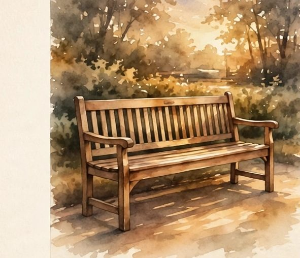
A long bench in evening light, with room at both ends of it.
Tell the memory in the company of someone who was there, and within a minute the room develops a second door. It was raining, they say. It was not raining, you say, it was the summer the river ran low. They remember the blue car; you would swear to the green one. Neither of you is lying. The keeper, who has heard a thousand of these audits, does not reach for a gavel. A shared hour is not a shared recording. Each person carried a different copy out of the room, because each person stood in a different part of it, attending to different things.
The differences are not damage. Look closer, and they are usually information: the other version kept the detail you walked past. They remember what was said in the kitchen because they were in the kitchen; you remember the road because you arrived by it. Put the versions side by side and the room gets bigger, not shakier — a window where you remembered a wall, a whole extra conversation humming beyond the doorway. The keeper files the variants together, in one folder, unranked. A memory with only one witness's word for it is a narrower thing than the hour actually was.
There will be one difference that matters more than weather and cars, and it is worth handling gently: what the hour meant. For you it was the day everything turned; for them it may have been a pleasant Tuesday in a long, undifferentiated summer. Do not be wounded by this, and do not correct it. The room holds both meanings the way a table holds both elbows. Your copy is not demoted by their shrug. It only means the hour was generous enough to be several things at once, and the house is large enough to keep every one of them on the register.
65Their Version Is Also Kept
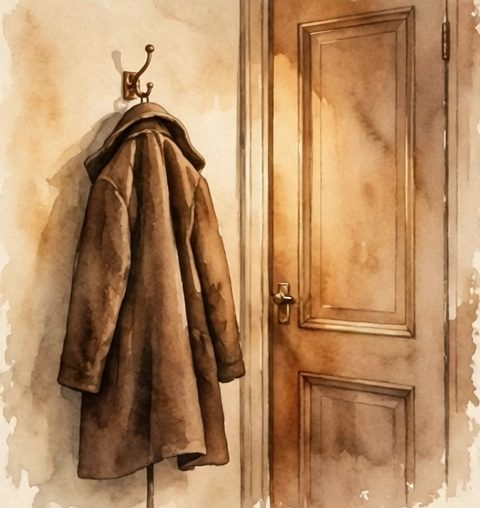
A coat hanging by a door, one of several along the wall.
It follows, though it takes some keepers years to accept it, that their version is also kept. Not as a footnote to yours, not as an appendix of errors, but in a room of its own, in their house, kept with the same fidelity you bring to yours. Somewhere across town or across the years, the same hour sits in different light, with the emphasis moved, the hero changed, the joke landing on the other foot — and it is being carried just as carefully, told at just as many tables. The keeper finds this thought steadier than it first appears. The hour is kept in more than one house now.
This is, if you think about it, the memory's truest safety, and no lock improves on it. What one keeper forgets, another retains. The name that slips from your copy waits patiently in theirs, along with the song, the price of the tickets, the exact words of the toast. Shared keeping is the oldest backup in the world, older than paper. It is also why their version must not be edited by you, even in love, even in the telling. You would not want them rearranging your room. The courtesy runs both ways, down the corridor, house to house, version to version.
Sometimes the versions meet again, late, and are laid side by side like two maps of one coastline — agreeing on the shape, differing on the soundings, both plainly drawn from the same shore. The keeper has seen people weep with relief at that meeting, and laugh, which is the same relief in another key. Keep your version honestly, then, and let theirs stand. The hour was lived once and is kept many times, and every keeping is a small act of faithfulness to it. In the register of this house, their copy is entered in full: believed, uncorrected, and shelved beside your own.
66The Child in the Memory Is You
There is one more resident of the room who is easy to overlook, because the keeper stands between him and the door: the child in the memory is you. Not you as you are now, telling it — you as you were then, at that height, with those urgencies, understanding perhaps a third of what was happening and feeling all of it. He does not know what the hour will come to mean. He does not know he is standing in the room the whole house will be built around. He is simply there, in the good light, being entirely serious about the things children are serious about.
The temptation, visiting, is to coach him: to warn, to reassure, to explain what the adults were really saying in the kitchen. The keeper forbids it, kindly. The child is not a draft of you awaiting your corrections. He was a complete person at his own scale, and the memory kept him whole. Besides, the coaching runs both ways. He knows things you have filed under later knowledge — how the light actually felt, what the day was for, before it was for anything. Stand in the room his way for a while. The view from that height is the one the house was built to preserve.
Treating the child as a resident changes the keeping. You stop apologizing for him, for a start — for not knowing, not helping more, not understanding what could not have been understood at that age with that much information. The room makes no such charges. It holds him the way it holds everyone in it: at his actual size, in his actual hour, owed nothing but accuracy and a little respect. You were once the smallest person in the memory, and the house was already keeping you then, before you knew there was a house. The keeper only took over a tenancy that began, unnoticed, that day.
67A Hand You Can Still Feel
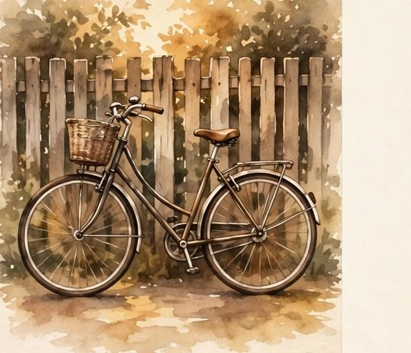
A bicycle leaning at a fence, its bell catching the light.
Of all the copies the senses keep, the ones in the hands are the hardest to argue with. You can still feel it: a hand, its weight and weather, the exact pressure of it on your shoulder or around your smaller hand, the grip that meant cross here, wait here, look at that. The people it belonged to may be across the world or out of it; the hand remains in the keeping, archived in the muscles, summoned by nothing more than a gate latch or a railing at the right height. The keeper does not file this under mystery. It is simply the oldest record in the house.
A hand is the least theatrical of keepsakes, and the most democratic. It kept no speeches. It kept temperature, callus, the tremor on one particular day that the hand hoped you had not noticed and you had. When the room is visited, the hand arrives without being called, the way weather arrives — and for a moment the whole memory reassembles around that single point of contact, the way a coat hangs from one hook. The keeper's register notes it each time without commentary. Some entries in a house do not need interpreting. They need only to be confirmed, again, as still in the keeping.
There is nothing to do about a kept hand, and that is its dignity. It cannot be photographed, written down, or handed on intact — your telling can point at it, the way you point at a chair and say, that is where she sat. But it can be answered. The hand you place now on a shoulder, at a crossing, in the same unhurried grip, is the copy reproducing itself in the only medium it trusts. The room keeps what it keeps, and some of it it keeps in you, at the ends of your arms, ready before you are.
68What You Would Say to Them Now
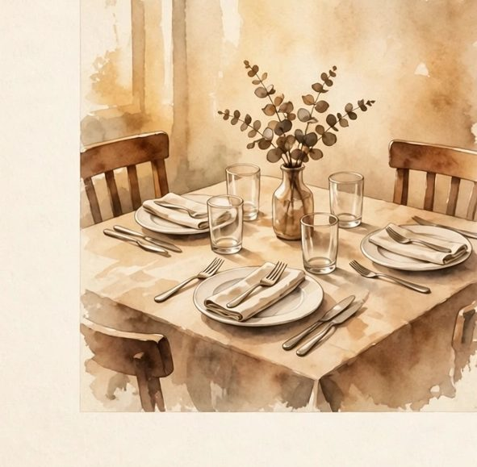
A table set for three, one place laid and untouched.
Every keeper rehearses it eventually: what you would say to them now, if the room allowed visitors from the corridor of the present. The speech changes over the years. At first it is mostly news — I made it, we moved, you were right about the money. Later it gets shorter and stranger: I understand about the silences now. Then, if the keeper is honest, it narrows to a few plain sentences that took decades to become sayable, and the room, which is patient, has been holding them in escrow the whole time, unclaimed.
The house offers one piece of craft about these speeches: keep them at the size of the room. The people in the memory do not need your whole subsequent biography; they are not examiners, and the hour is not a hearing. What fits is what could have been said across that table, in that light, between the passing of dishes — a thanks that was owed and not paid, a question you were too young or too proud to ask, the admission that you have thought of that day, roughly, every week since. Small coin spends best in the kept room. It always did.
Some of what you would say, of course, can still be said — and the keeper is brisk about the distinction. If they are alive and findable, the room is not a substitute for the errand; it is, at most, the place where the errand gets its courage. For the ones beyond errands, the saying still matters, done plainly, in the telling, where they can be named in the present tense the room insists on. A memory where someone is thanked out loud is a different room afterward — lighter by exactly the weight of the sentence, which turns out to have been considerable.
69The Memory Keeps Them in the Room
The practical miracle of the kept room is that it does not require anyone's permission to convene. The people in the memory may be scattered across four time zones and two cemeteries; the room gathers them at their original distances from the table, without travel, without notice, at the speed of a kettle. The keeper has stopped apologizing for this as if it were a trick of the light. It is the house's whole purpose. A memory kept this well is not a picture of the gathering. It is the gathering's surviving form, the one venue that never closes and never moves.
Notice what the room does not do: it does not improve them. They arrive with their tempers and their tiredness and the remark that stung a little then and stings a little still. The keeping is not a varnish. This is precisely why the room can be trusted — a gathering where everyone has been edited into kindness would be a dinner party of strangers. Instead they are kept at full strength, difficult and beloved in their original proportions, and the keeper moves among them on the rounds like a host who has long since stopped refereeing and simply keeps the teapot full and the door unlatched.
And so the room stays populated in a way no other part of the past manages. Elsewhere, the years thin out into dates and faces. Here, the population holds. They are kept in the room — not summoned, not detained, kept, the way a fire is kept: by attention, by feeding, by someone whose rounds include this door and who has never once considered skipping it. As long as the keeping continues, the hour has inhabitants, and the inhabitants have an address. It is the best the house can do for any of them, and on most days, the keeper notes, it is enough.
70No One in It Is a Prop
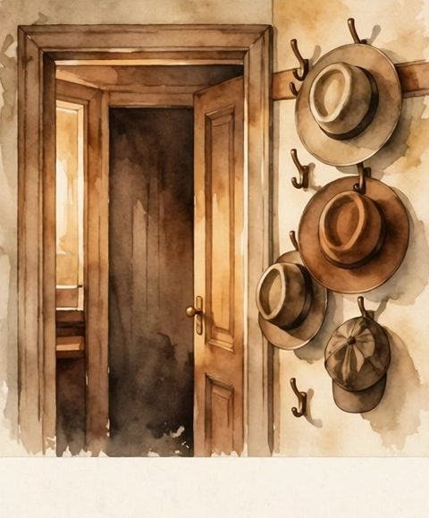
A doorway with hats of different sizes hanging on the hooks.
A rule of the house, posted where tellers will see it: no one in the memory is a prop. A prop exists to set a scene — the strict grandfather, the neighbor with the ladder, the aunt who always burned the first batch. Props have one trait and no interior, and they are recognized by how conveniently they arrive to illustrate the teller's point. The people in the kept room refuse this employment. They had interiors, errands, weather of their own. The grandfather was strict about one thing and helplessly soft about another, and the memory, honestly kept, holds both facts at once.
The flattening happens innocently, which is why the rule exists. A story told a hundred times sands its people down the way water sands stones: the complicated one becomes the funny one, the sad one becomes the warning. The keeper's rounds include a deliberate act of restoration — giving back, in the telling, one unneeded detail per person: the hobby nobody mentions, the kindness that fits no theme, the opinion that complicates the anecdote. A detail that serves no purpose in the story is the surest proof that a person, not a prop, is standing there. Keep a few in stock, always.
The people themselves, were they consulted, would mostly ask for exactly this: not to be improved, not to be indicted — to be remembered at their actual complexity, which is the only respectful size. The room honors them by keeping their contradictions in working order. He was wrong about the money and right about the dog. She frightened you and she fed you, sometimes within the hour. Tell it that way and the room stays honest, and the people in it stay people — which was the entire point of building a house around them in the first place.
71Shared Keeping, Shared Keys
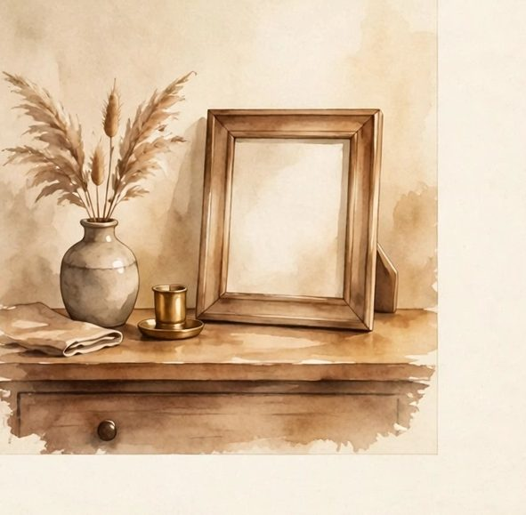
An empty photograph frame on a dresser, waiting to be filled.
The keeping was never meant to be a solo tenancy, and the room is at its best when the keys are shared. Others were there; others carry copies; the house acknowledges them as co-keepers with standing, not as guests at your remembering. Shared keeping changes the memory's legal status, so to speak: it stops being your account of the hour and becomes the hour's account of itself, assembled from several witnesses, none of whom holds the complete set. The keeper's register has a column for this, and the entries in it are the sturdiest in the book.
There are practical arrangements to be made, and the house makes them without embarrassment. Who holds the names and dates. Who can still say how the song went. Who keeps the version for the children and who keeps the version with the swearing in it. These are not morbid questions; they are the ordinary administration of anything meant to last. A memory with several keepers can survive one keeper's bad year, one keeper's faulty stretch, one keeper's silence — the others carry it across, the way neighbors carry a piano, each taking the corner that comes to hand.
Shared keys also mean shared admission. Their friends of the hour, their children, the ones who arrived late to the story and stayed — the room opens for more keepers than the original cast. This is not dilution. Every new keeper who learns the telling properly adds a room to the memory's future, a house it can be told in after yours. The keeper counts this the soundest arithmetic in the building: a memory kept by one person lasts one lifetime; a memory kept by a household of keepers lasts exactly as long as households, which is to say, indefinitely longer.
72The Empty Chair in It
Every honest telling of the room eventually reaches the empty chair. It is not always the same chair, and the house does not insist on a single interpretation: it may belong to the one who is gone, or the one who had not yet arrived, or the one who stepped out for air at the crucial minute and missed the sentence everyone quotes. What matters is that the chair is in the room, counted in the setting of the table, not hidden in the scullery of the story. An honest memory admits its empty chairs. A decorated one pretends the table was always exactly full.
The chair does quiet work in the keeping. It keeps the room from sealing. A gathering with no absence in it hardens, over the years, into a tableau — pretty, airless, faintly false. The empty chair lets the weather in. It reminds the telling that the hour was lived by mortals on an ordinary day, when people could still leave, and arrive, and be missed. The keeper dusts it on the rounds with the same cloth as the others. It is not a memorial and it is not a wound. It is furniture, with a meaning, the way the best furniture has.
Visitors to the room sometimes want the chair explained, named, resolved. The keeper mostly declines. Some chairs are empty the way a held note is empty — the space is part of the music. What the house offers instead is a place to sit with it: the recognition that every long-kept memory, carried far enough, acquires its absences, and that keeping them in view is not gloom but accuracy. The chair stays. The table is set around it. The hour goes on being told, in the room, with all its furniture — the occupied chairs, and this one, honestly empty.
73Keeping It Safe
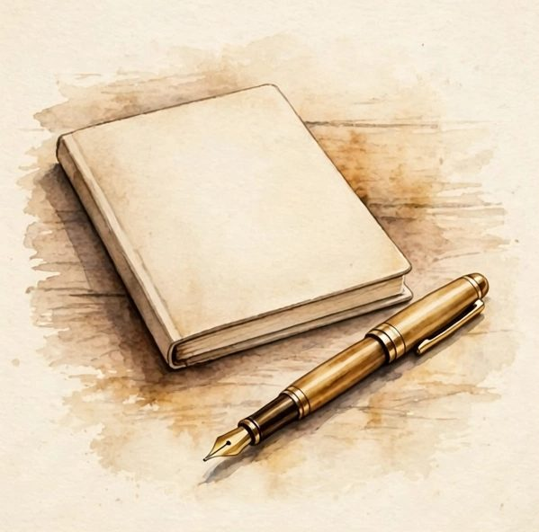
A fountain pen beside a blank notebook, ready for the telling.
Sooner or later every keeper comes down the corridor with the practical question: how is this kept safe. The hour has survived years of being carried in one person's head, through fevers and moves and the general weather of a life, and the keeper would like it to survive a few more — ideally in other heads, on other shelves, beyond the reach of any single accident. The house approves of the question. Keeping something safe is not the opposite of keeping it alive. It is the same work, viewed from the far end: what you carry, you keep; what you keep, you must also carry safely.
This hall is the workshop of the house, and its benches are unglamorous: paper, tellings, copies, witnesses, arrangements made in daylight. Nothing here requires talent. It requires only the decision that the memory deserves the same dull diligence as the deeds to the house and the name of the doctor — the documents a life runs on. The keeper is almost offended by how simple the provisions turn out to be. Write it. Tell it. Lodge copies where fires cannot reach all of them at once. The techniques are old because the danger is old, and the room has outlasted worse centuries than this one.
One caution before the work begins, and the keeper delivers it at the door of the workshop: safety is a servant here, not a master. The point of every provision in this hall is the room's continuing life — its tellings, its visitors, its ordinary Tuesdays — not its embalming. A memory can be kept so safely that it stops being visited, and that is a loss disguised as diligence, and this house counts it a loss. Keep it safe the way you keep a path safe: cleared, lit, and walked on. The walking is not a risk to the path. The walking is the path.
74Written Down, in Your Own Hand
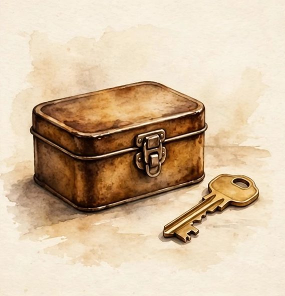
A locked tin box with its key resting beside it.
The first provision is the oldest in the workshop: write it down, in your own hand. Not typed into the great indifferent archive, not dictated — written, with a pen, at the speed of thinking, so that the page keeps what a transcript would iron out: the crossings, the word you reached for twice, the sentence that trails off where the telling always trails off. Your hand knows the memory's true order better than your filing system does. The page it produces will not be literature. It will be evidence — the hour, attested by the person who was there, in the hand they had at the time.
Write it whole, the keeper advises, and write it plainly, and date it, because you are writing for a reader who will need the date: yourself, later, in an argument with your own recollection. Include the unglamorous furniture — the names, the street, what things cost, who was angry and had cause. Include, above all, the seams: a note in the margin that the car might have been green, that the words were something like these. A written memory that admits its uncertainties is worth ten that assert everything. The honest wobbles are how the future will know the rest can be trusted.
Then put the pages where written things survive: not in the one drawer, but treated the way this hall treats everything — copied in time, lodged with the household's real papers, mentioned to someone. The writing is not the memory; the house is clear-eyed about that. It is the memory's anchor and spare key, the version that can be consulted when the telling drifts and corrected when the telling recovers. A keeper who has written the hour down owns something the years negotiate with carefully. They arrive with their softening and their weather, and find the facts already in residence, in ink, in your own unmistakable hand.
75Told to One Person Who Will Outlive You
The second provision is a person: tell it, deliberately and whole, to one person who will outlive you. Not the table version, shortened for soup; the full telling, with the kettle on and the evening unhurried, given the way a key is given — with the understanding that a copy of the house now exists in another keeping. Choose for love and memory both. The ideal deputy is someone who was not there, young enough to carry it far, and fond enough of you to keep the room aired after the original keeper's rounds have ended.
Tell it more than once, the keeper adds, because deputies, like tellers, keep what they have rehearsed. Let them ask the questions that reveal where your telling assumes too much — the names you never explain, the door you never describe. Their questions are a gift: they show the memory as it will look without you standing beside it, glossing. Answer fully. Add the marginal notes aloud. What you are building in those evenings is not an audience. It is a succession, arranged early and kindly, while there is all the time in the world to do it properly.
And let the deputy's version be theirs. They will compress where you expand; they will keep the dog and lose the wallpaper; in twenty years their telling will be the memory's main road into the future, and it will not be yours. This is not the failure of the provision. It is the provision. A memory survives the way a song survives — by being sung in other voices, slightly changed, entirely itself. The keeper who cannot bear the changes has confused keeping with owning, and the house, gently, declines to help with the second of those.
The Memory Desk
One desk receives all correspondence for this house — questions, corrections, and word of any memory you keep: where it lives, who else is in it, and how it is holding up against the years. It is read in the order it arrives.
76A Photograph Is a Crutch, Not the Leg
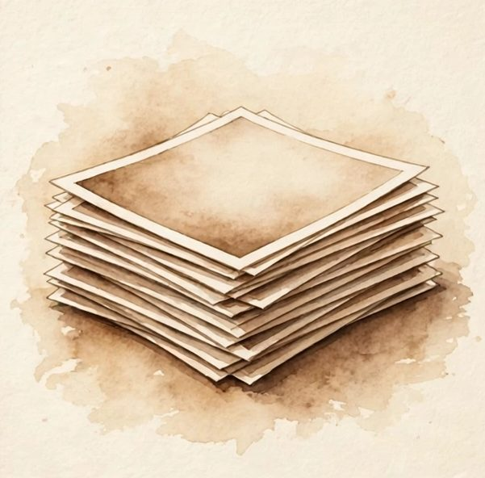
A neat stack of copied photographs, corners squared and squared again.
The photograph, where one exists, is welcomed in the workshop and assigned its correct rank: a crutch, not the leg. It is genuinely useful — it fixes a face, a car's color, the pattern of a wallpaper that the telling has been getting wrong for years — and it is genuinely limited, the way a crutch is limited. Lean on it entirely and the memory stops walking. The hour was three hours long and full of weather; the photograph holds one sixtieth of a second of it, from one side, in silence, without the smell of the rain or the second half of the joke.
The keeper has watched keepers make both errors with photographs, and catalogs them impartially. The first error is worship: the image consulted so often that it replaces the room — until the memory is no longer the day but the picture of the day, its flat light and frozen expressions quoted against the richer recollection until the recollection apologizes and withdraws. The second error is the bonfire of purity, photographs scorned as inauthentic by keepers who trust only the inner record. The house declines both. The inner record fades too, and when it does, the crutch under the arm is a mercy.
Use it, then, the way its rank suggests. Let it testify about faces and furniture, and let the telling overrule it about everything it cannot know: the tone, the timing, what the hour was for. Copy it while copying is easy — this hall will return to copies — and write on its back, in pencil, the names, because a photograph of unnamed people is a message in a bottle thrown into a fog. And when the photograph and the memory disagree about the wallpaper, enjoy the small scandal quietly, and keep both. The house has room, and the truth, as usual, is a resident with several addresses.
77Kept in More Than One Place
A fireproof box on a high shelf, up out of the damp.
The workshop's plainest rule is arithmetic: a thing kept in one place is kept at the mercy of that place. Fire, flood, the flooded basement, the cleared house, the laptop that dies like a light going out — the centuries have a long list of single points of failure, and every keeper's family has contributed an entry. The memory, which took a whole life to make, deserves better odds than the one drawer. So the house distributes it: the written pages here, a copy there, the telling lodged in a deputy's keeping, the photograph in two albums in two towns, like seed grain stored in separate barns.
There is no need to make a project of it, and the keeper resists turning prudence into ceremony. Copies accumulate naturally around a memory that is actually lived with — the letter quoted in another letter, the story retold into a grandchild's notebook, the recipe card in a daughter's kitchen written in the margin with that day in it. The keeper's work is only to notice these stray copies, approve them, and add the deliberate ones they suggest. An hour kept in five places can lose four of its homes and still be whole in the fifth. That is the entire mathematics of this room.
Kept in more than one place also means kept in more than one kind of place — and this refinement matters, because different losses take different things. Paper burns and memory does not; memory fades and paper is patient; people move away and objects stay. Distribute across kinds as well as addresses: the telling in a person, the facts on a page, the faces in a photograph, the smell in a kept jar of the actual tea, if the house is lucky. The hour, hedged this way, stops being a single candle. It becomes a small constellation — dim any one star, and the shape still reads clearly in the dark.
78The Danger of Keeping It Too Tight
Now the workshop issues its warning, and it is aimed at the diligent: the danger of keeping it too tight. It begins innocently, as most corrosion does. The memory is precious, so it is told less often, to fewer people, on worthier occasions. The pages are too important to handle. The photograph is too fragile for the album's ordinary traffic. Each protection is reasonable, and the sum of them is a slow starvation — a room visited so rarely, with such ceremony, that visiting stops feeling like something the living do, and the hour begins its long conversion from a memory into an exhibit.
A memory kept too tight also stops being corrected, and this is the quieter damage. Tellings kept in circulation are sanded by listeners' questions, refreshed by other witnesses, kept honest by the friction of the world. The sealed version, handled by no one, grows stranger in the dark — details swelling, grievances hardening, the whole thing slowly setting like resin around whatever shape it had the day it was withdrawn. The keeper has opened such rooms after twenty years and found the hour intact but unrecognizable, preserved the way a specimen is preserved: completely, and at the cost of everything that made it worth preserving.
The dose makes the poison, the keeper says, and the dose here is ordinary use. A kept memory should be told on unimportant evenings, lent to unimportant afternoons, allowed to be interrupted, misremembered in company and repaired in company. It should be kept the way a good tool is kept — oiled, yes, and stored dry, but taken down weekly and put to work, because a tool that is never used is not being kept. It is being retired, beautifully. The house prefers its treasures worn. Wear, in this building, is not the enemy of keeping. Wear is the evidence of it.
79Not Under Glass
A string of keys hung by a door, worn bright with daily use.
Not under glass: the workshop's rule, once the warning about tight keeping has been heard, can be stated that simply. Glass is for things whose story is finished — the medal, the christening spoon, the instrument nobody alive can play. The kept memory's story is not finished; it is told at tables this year, argued over by witnesses, promised to deputies. To put it under glass is to announce a retirement it never requested. The keeper removes the glass wherever it appears, politely, the way you would take a lampshade off a lamp someone had mistaken for an ornament.
In practice, the rule means the memory stays in the house's working areas, not its display cabinet. It lives where the cooking happens. It is risked in conversation with strangers, spent on children who will certainly retell it wrong, brought out in weather — on the tired days and the distracted ones, not only in the candlelit mood that flatters it. Things kept in use get chipped; the house accepts chips. A chipped, warm, constantly handled memory is in far less danger than a pristine one, because the pristine one has exactly one keeper who knows where it is, and the handled one has a whole household.
There is a dignity question here too, and the keeper states it plainly: the people in the memory did not live that hour under glass. They lived it in the noise, at full volume, with the dog under the table. To keep the hour in silence and tissue is to keep it in a manner they would not recognize and might not forgive. Keep it the way it was lived — aired, handled, told with the dishes still on the table. The room has a hearth, not a vitrine, and the difference is the whole doctrine of this house in one piece of furniture.
80Insurance Is a Story Told Twice
An envelope tucked inside a book, found by a later reader.
The workshop's last provision sounds like a riddle and is only arithmetic: insurance is a story told twice. Every telling of the memory is a copy made — not on paper, but in a listener, who becomes, whether they applied for the post or not, a secondary keeper with a version in storage. A story told twice exists in two places. A story told at fifty tables exists in fifty, in fifty variations, and no fire, flood or forgetfulness can reach them all at once. The keeper therefore treats audiences as infrastructure. Every listener is a small, warm, off-site facility for the hour's survival.
This reframes the telling entirely, and the keeper enjoys watching it happen. The story told yet again at the family table is not repetition or vanity; it is a backup being run, on schedule, in good company. The children rolling their eyes are, at that very moment, memorizing. The friend who has heard it four times could now tell it at a fifth table, in another city, with your emphases — and someday, in a kitchen you will never see, they will. The house counts those future tellings in the register as assets, the way other houses count insurance policies, except these pay out in company.
So tell it twice. Tell it at the slightest excuse and at none. Tell it until the telling itself has keepers — until the hour belongs to the household's common stock, like the good pan and the song everyone knows the chorus of. That is the final state this workshop works toward: not a memory defended, but a memory distributed so widely, in so many keepings, that its survival no longer depends on any one of them. The keeper locks the workshop door at night entirely without anxiety. The insurance is out there, at fifty tables, being told.
81The Box It Travels In
A kept memory does not stay in the house where it happened. It travels. It has crossed cities in coat pockets and survived moves that broke furniture and scattered libraries, because its box is not made of wood. The box a memory travels in is the telling itself, folded small, plus the body that carries it — the hands that still remember their part, the nose that would know the smell in a crowd. Other possessions need packing paper and a van. This one needs only to be carried by someone who is going the same way, and its keeper is always going the same way.
The box is not strong in the way safes are strong. It will not stop a fire, and it was never meant to. What it resists is slower and more ordinary: the clutter of years, the thousand newer hours that crowd in front of the bright one and ask to be remembered instead. A box is a boundary. By travelling in one — a set telling, a known route through the day, the same first sentence every time — the memory declines to be filed with everything else. It stays separate, portable, and unmistakably itself, the way a letter stays itself inside an envelope among loose papers.
Every keeper improves the box without noticing. A detail is padded here, a loose corner folded down there; the route gets shorter and surer with the years. This is sometimes called forgetting, and sometimes it is — but from inside the keeping it feels more like packing well. What would slosh and spill in an open bucket arrives whole in a fitted case. The box is not the memory, and the house is careful never to confuse them. It is only the kindness done to the memory for the road: a way of saying that this, of everything, travels with care.
82Backups Are a Form of Love
A cedar chest at the foot of a bed, keeping its quiet copy.
A backup is usually an unglamorous thing: a second copy, made in advance, against a loss nobody wants to picture. Applied to a memory, it sounds almost comical — until the keeper considers what is actually being copied. Not the facts; facts can be written down by anyone. What a backup of a memory preserves is the keeping itself: the emphasis, the order, the place where the voice drops. To make one is to say, quietly and without ceremony, that this hour matters enough to exist in more than one keeping. The house counts that among the plainest forms of love it knows.
So the copies are kept in unlike places, the way careful people have always stored what matters. One in the cedar chest, literal and patient, holding the written page. One in another person's keeping, told at a table and carried away in a second memory that will age it differently. One in the body, below the reach of paper altogether. Fire can take a house, and time can take a keeper, but a thing kept in three unlike places has to be unlucky three separate ways. The house does not call this anxiety. It calls it distribution, which is love with its sleeves rolled up.
There is a tenderness in the redundancy itself. Nobody makes a backup of what they expect to keep forever, easily and without effort; the copy admits the risk out loud. And yet the admission is not gloomy. It is the same practical tenderness that labels the jam, dates the photograph, teaches the recipe to a second pair of hands. Love, in a long life, turns out to be largely this: the refusal to let the precious thing exist only once. The memory, copied with care, is not diminished by its copies. It is accompanied by them, the way a tune is accompanied by other voices.
83Safe from Fire, Not from Time
A lantern kept ready by a door, against the dark and the years.
The house is honest about what its keeping can and cannot do. Against fire, against flood, against the ordinary accidents that empty houses, a memory can be made nearly safe: copied, written, told abroad, kept in more than one place. Against time there is no such policy. Time does not break in. It is let in daily, by the keeper, at every meal — it thins the colors a little, loosens a date, persuades a face at the edge of the scene to step quietly out of it. No lock addresses that. The keeping was never a defense against time, and it cheats itself when it pretends to be.
The lantern by the door is the house's emblem for this. It is kept trimmed and ready, not because the keeper believes it can hold back the night, but because the night is exactly when a light is wanted. So with the keeping. The telling, the writing, the backups — none of them stop the years. They make the years passable. A memory tended in the open, visited often, carried on ordinary days, fades the way a path fades: slowly, and mostly where nobody walks. What is used stays findable. The house asks for no more than that, and has stopped pretending that more was ever on offer.
And there is a strange mercy in the arrangement. A thing safe from time would have to be outside it, and the memory is not outside anything — it is the keeper's own hour, ageing alongside the hands that carry it. The house would not trade that for a colder safety. Let the photograph be fireproof; the memory is allowed to be mortal. It was never the ambition to keep it forever in mint condition. The ambition was smaller and warmer: to keep it company while it lasts, and to be found, at the end, still walking beside it.
84The Keeper's Rounds
Every house with anything precious in it has rounds: the slow circuit made at day's end, lamp in hand, past the doors that matter. The keeper's rounds are not anxious. Nothing is being searched for, and nothing is expected to be wrong. It is simply the habit of passing the kept room once more before sleep — the written page glanced at, the chest's lid settled, the telling run through once in the mind the way fingers run over a banister, checking nothing, confirming everything. A house that is walked regularly does not surprise its keeper. The rounds are how the keeping stays a habit instead of becoming an event.
What the rounds catch is drift, which is only ever dangerous unobserved. A date in the telling has slipped by a year. A name at the edge of the scene is wearing the wrong coat. The smell that opens the memory has thinned to a rumor of itself. Caught early, on an ordinary evening, these are nothing — a note made, a detail re-anchored against a letter or a listener's memory, the coat returned to its owner. Left for a decade, they would have become the memory. The keeper is not a perfectionist; the rounds forgive a great deal. They simply refuse to let the small wrong things go unwitnessed for long.
The rounds end where they always end: at the door of the kept room, which is never locked. The keeper does not go in every night. Often it is enough to pass, to feel the warmth of the place like a hand passing a stove, and to go on to bed knowing the house is in order. Keeping, at this pitch, is not work. It is the quiet administration of love — regular, unshowy, and mostly invisible, like all the maintenance that has ever kept anything standing. The lamp is set down. The house sleeps around its one bright room, and the rounds will be made again tomorrow.
85If It Faded
An empty room held in soft, fading light.
Say it plainly, the way the house prefers: if it faded. Not tonight, not by fire — slowly, the way ink goes in a sunny window, until one day the keeper reaches for the bright hour and finds the outline of it, and the warmth, and not the hour itself. This hall is the house looking steadily at that possibility, because a keeping that cannot look at loss is not keeping but fear with good manners. The memory is the most precious thing in the house. The house has decided to think, once and carefully, about what would remain if the precious thing went.
First: a great deal would remain, and it is worth listing before the grief arrives to do the listing badly. The room would remain — the place in the life where the memory lived, kept swept by years of visiting. The habits of keeping would remain: the telling posture, the anniversaries noticed, the route the mind takes on certain evenings. The other keepers would remain, holding their pieces. And the keeper would remain, who is, after all, the person the memory happened to. Fading takes the picture. It does not so easily take the house that was rebuilt, room by room, around the picture's wall.
None of this is consolation, exactly, and the house does not offer it as consolation. It is surveyor's work: measuring the ground before the weather comes, so that if the weather comes it is met by someone who has already stood here, in the calm, and taken the dimensions of the loss. What the survey finds is neither nothing nor everything. The bright hour is irreplaceable; the life built around keeping it is not nothing. Both are true, and this hall will hold them together, unflinching, for twelve rooms — because that, in the end, is what the long keeping was always for.
86The Fear Under the Keeping
A chair in a room with curtains half drawn, the light lowered.
Under all the keeping there is a fear, and the house does not pretend otherwise. It is not loud. It does not interrupt the telling or spoil the visits. It sits underneath the way a cellar sits underneath: the knowledge that the thing being kept can be lost, and that some part of the keeping — the writing, the copying, the rounds — is fear wearing its working clothes. The keeper is not ashamed of this. Fear of losing the bright hour is simply the price tag of having found it valuable. Nothing is feared for nothing; the fear is the valuation, stated in another currency.
The question is never whether the fear is present, but what work it is given to do. Given the wrong work, it tightens the keeping: the memory clutched, the telling rehearsed too often, every visit inspected like a border crossing, until the bright hour is kept the way misers keep — safely and joylessly, behind more and more locks. Given the right work, the same fear becomes simple care: copies made, tellings shared, rounds walked, and then — the day released. The difference is not in the size of the fear. It is in whether the keeper trusts the keeping more than the fear, most days.
On good days the keeper can even thank it. The fear is why the page got written while the hand was still sure. It is why the story was told to the one person who will outlive the telling, instead of being saved for a someday that keeps receding. It is why the rounds are walked at all. Left entirely without fear, the keeping might drift into assumption — the bright hour presumed permanent, uncared for, and lost precisely because nobody believed it could be. The fear under the keeping is not the enemy of the house. It is the draught under the door that reminds the house to tend the fire.
87Details Go First, and That Is Ordinary
It would not go all at once, and it would not go from the center. Details go first: the exact words of the joke, the color of the door, whether it was Tuesday. The edges of the hour are handled most by the telling — polished, borrowed, re-cut — and what is handled most wears first. The keeper who understands this is not surprised by it, any more than a gardener is surprised that the path's edge crumbles before the path. Ordinariness is the point. A memory is not a stone that chips; it is a shoreline, and shorelines are supposed to redraw themselves a little with every tide.
There is even a fairness in the order of it. Details are the most replaceable part of the hour — they can be checked against a letter, borrowed back from another keeper, looked up in the written page. What fades last is the least replaceable: the feel of the thing, the reason it mattered, the warmth in the chest that says this one, of all of them. Time, it turns out, takes the memory the way a careful thief might be imagined to — it leaves the valuables and goes off with the packaging. The keeper, surveying a thinned detail, can say so without panic: the box is worn. The contents are, so far, themselves.
So the keeper's practice is adjusted to the order of loss, calmly. Details get the paperwork — written, dated, kept in the chest — because details are what paperwork is for. The middle gets the visits. And nobody wastes a good fright on a missing door color, which was only ever the frame and not the picture. The house has watched keepers grieve a date as if the hour itself had died, and it gently disagrees. The hour is not its frame. If details go first, and that is ordinary, then their going is not the beginning of the end. It is the memory doing what memories do, at the usual speed, in the usual direction.
88The Shape Would Remain
Mist lying over a familiar road at dawn, the way still known.
Under the details there is the shape, and the shape is hardier. The shape is the hour's outline: who was there, in what relation; the weather of it; where it stands in the life, between which other years; the direction it faces. Keepers who have lost the words of the song often find they can still walk the tune. The shape is like that — the tune of the day, held in the body and in the life's arrangement, long after the lyrics have thinned. A road in mist is still the road. You cannot describe every bend, and you do not need to. You know the way it goes.
The shape is also what the rest of the life is built against. Decisions were leaned on that hour the way furniture is leaned against a wall; habits follow its outline; other memories are dated from it — before that summer, after that summer. Remove the details and the wall still stands in the architecture of everything else. This is why keepers who fear total loss often overestimate it: they imagine the fading taking the hour out of the life entirely, when in fact the life has grown around it. A tree does not lose the fence it grew around. The fence's shape is in the tree, whatever becomes of the fence.
The house does not claim the shape is enough. A tune without words is a real loss of the words, and pretending otherwise would be the kind of cheerfulness this hall refuses. It claims only that the loss would be partial in a particular, knowable way — that what goes first and what stays longest are different substances, and that the staying substance is the load-bearing one. The keeper who knows this fears differently: less wildly, more precisely. There is comfort in precision, even when the news is not good. The mist takes the view. It does not take the road, and the keeper knows the road by heart.
89Others Hold Pieces of It
A hearth gone down to embers, still warm to the hand.
No keeper holds the whole of it, and this turns out to be structural, not accidental. The others who were there hold pieces the keeper never had: the hour from across the table, the joke as heard, the keeper's own face mid-laugh, which no mirror attended. Listeners hold pieces too — the telling as it landed, years ago, in a kitchen the keeper has forgotten. The memory is less a single kept thing than a hearth with many hands around it across the years, each warming a slightly different part. If one pair of hands withdraws, the fire is not therefore unheld.
This is why a fading keeper is not in the position it first appears. Pieces held elsewhere can be visited. The sister remembers the song that was playing; the old friend, told the outline, hands back the ending the keeper had misplaced; a listener from thirty years ago repeats the keeper's own sentence back, word-perfect, from a memory that was never the keeper's to lose. The hour was distributed long before anyone thought to call it a backup. Life did the distribution itself, at the table, the way it does everything important — without forms, without ceremony, and more thoroughly than any plan the house could have drawn.
There is humility in it, and the house recommends the humility. The keeper of the one memory is not its owner, only its longest-serving tenant. Other tenancies are real. When the versions differ — and they will — the keeper who remembers this hall complains less; a piece held by another is not a theft but a deposit. And on the far side of the thought stands the plainest comfort this hall owns: the hour was lived in company, and company, without being asked, has been keeping it ever since, in pieces, in parallel, in other houses — where even the keeper's own fading cannot reach it.
90You Would Still Know Where It Stood
Ask anyone who has lost a tree from a garden: years later they can still walk to the place. The grass is unremarkable, the light has redistributed itself, and the knowledge is not in the eyes at all — it is in the feet, in the body's old geography. So with the kept hour, in the far country of this hypothetical. If it faded, the keeper would still know where it stood in the life: after that winter, before the move, in the years when the laugh came easily. The coordinates survive the view. A place can be known the way a word is known — by use, not by looking.
And an address is not nothing. Ask the keeper, then, not to recite the hour but to point to it in the life, and the pointing hand does not hesitate. This is the part of keeping that lives below memory altogether, in the arrangement of a person — the way a house knows where its rooms are even in the dark, even the rooms nobody enters anymore. The dark does not abolish the geography. What faded would be the furniture, the wallpaper, the exact arrangement of light at four o'clock. Where the room stood — that, the house would go on knowing without being taught.
Perhaps this is the deepest layer of the keeping, and the least losable: not the memory, and not even the shape of it, but its address in a life. A keeper could lose the words, lose the colors, lose the order of the afternoon — and still turn, unerringly, toward the place where it all happened inside them, the way a sleeper turns toward the window side of the bed. The house finds this thought steadying, and sets it down without ornament. The view can go. The standing-place remains. You would still know where it stood, and knowing where it stood is a way of still having been there.
The Memory Desk
One desk receives all correspondence for this house — questions, corrections, and word of any memory you keep: where it lives, who else is in it, and how it is holding up against the years. It is read in the order it arrives.
91Losing It Would Not Erase Having Lived It
An album with one page gone, the rest still warm from handling.
The house states this room's fact early, because everything else in the hall leans on it: the hour was lived. It was lived in real time, at full size, by a person who was entirely there — and that living is not stored in the memory like water in a tank, to be lost when the tank cracks. The memory is the record of the living, not the living itself. Records burn in every archive ever kept; the events they recorded are not thereby un-happened. What was warm was warm. What was said was said. No later fading reaches backward and edits the afternoon itself.
And the living left its marks in more places than the keeper's memory. It is in the people who were there, changed by an afternoon they may describe badly and carry accurately. It is in the keeper's habits — the route chosen ever since, the kindness practiced because that hour taught it, the standard quietly set. A lived hour radiates into a life the way heat radiates into a room, and the radiation does not stop when the fire is forgotten. The keeper who cannot recall the day can still be, in a dozen daily ways, the person that day produced. Having lived it is not a possession. It is a cause.
So the arithmetic of the loss changes when this room is entered honestly. Losing the memory would be losing the record, the revisiting, the telling — real losses, all of them, and this hall does not minimize them. But it would not be losing the hour. The hour is spent, in the only honorable sense: spent the way money is spent on a feast, gone into the living it bought. Nobody calls a feast wasted because it cannot be eaten twice. The keeper ate. That the menu is lost is a pity. That the dinner happened is not in question, and never was.
92The Room Would Keep Its Warmth a While
A doorway opening onto ordinary morning light.
Anyone who has lived with a hearth knows the hour after the fire goes out. The room does not go cold with the flame. The stones hold their warmth and give it back slowly, and the chairs stay pleasant, and the evening continues in the afterglow almost as if nothing had ended. The house proposes this as the exact physics of the kept memory, in the fading case. A room visited daily for forty years does not cool in a day. Its warmth is in the walls now — in the life arranged around it, in the people seasoned by its tellings, in the keeper's own temperature.
The keeper would notice it on ordinary mornings first. The day still opens onto the kept hour the way a doorway opens onto morning light — not the scene itself, perhaps, but the orientation, the sense of which way is bright. Certain kindnesses would still come easily, because the room warmed the hands that do them. Certain standards would hold, certain jokes would land, certain autumns would feel significant for reasons the keeper could no longer file. Warmth without a visible fire looks, from outside, like character. From inside, it feels like a house that has not yet cooled, and may not cool within the keeper's tenancy at all.
This is not a reason to welcome the fading, and the house does not welcome it. It is a reason to measure it correctly when it is feared at three in the morning. The fear says: all of it, gone, the room cold. The survey says: the fire first, the furniture slowly, the warmth last and longest — a cooling measured in years, on a slope the keeper can live on. A room that has been loved for decades is not a tent. It holds its temperature the way everything well-built does, by mass. The mass is the keeping itself, accumulated. It does not evaporate. It radiates, slowly, in the keeper's favor.
93Grief for a Memory Is a Small, Real Grief
If the hour faded, there would be grief, and the house insists on calling it by its name, at its right size. Grief for a memory is a small, real grief. Small, because nobody has died; the mourner still has the life, the people, the warmth, the address where it stood. Real, because something irreplaceable would genuinely be gone — the revisiting itself, the door the keeper could open at will, the one bright room entered a thousand times. A grief does not have to be the largest kind to be owed honesty. The house keeps a chair for it anyway, the way it keeps chairs for smaller guests who are nevertheless expected.
What makes it lonely is that the world has no ceremony for it. There is no card for the fading of a bright hour, no casserole, no sanctioned afternoon off. The keeper would grieve at the sink, in the car, mid-sentence at a table where everyone else has moved on to the weather — grieving a thing most people never knew was being kept, in a house nobody else could see into. Unmarked griefs are not lesser griefs; they are simply unshepherded. The house marks this one. It says: the loss of the revisiting is a loss with a shape, and the shape deserves a name, and the name is grief, small and real.
And then the house adds the part that steadies it: the grief would itself be a kind of keeping. Nobody grieves what they did not love, and the ache at the empty doorway would be the last, faithful form of the attention that built the room. It would fade too, in time — griefs do, even unshepherded ones — but while it lasted it would testify, accurately, to the whole arrangement: that an hour was chosen, carried, told, and warmed for a lifetime, and that its going left weather behind it. A small, real grief, honestly sized, is not the failure of the keeping. It is the keeping, in its final tense.
94What Cannot Be Taken Retroactively
A garden bench standing in the first fog of the morning.
Some things, once done, cannot be undone by any later loss, and the house keeps a short, exact list of them. The hour's effects are already out in the world, beyond recall. The people it warmed are warmed — that warmth has been spent onward, into their own days, their own houses, people the keeper will never meet. The choices it steered have been taken and their consequences lived. The keeper it made is made. Fading is a present-tense event; it has no jurisdiction over the past. Even total loss, arriving tomorrow, would arrive too late to touch any of that.
Add the tellings. Every telling ever given is already loose in the world, and cannot be recalled by the teller's forgetting. The story sits in a dozen other houses now, in other keepers' keeping, where it will be retold in voices the original keeper would not recognize and at tables not yet built. Whatever happens in one house cannot unhappen in the others. This is the retroactive safety the house finds most quietly astonishing: the memory's consequences do not live in the memory. They emigrated, years ago, with every listener who ever carried the story home. The origin can fade. The emigration is permanent.
The keeper is invited to stand in this room whenever the fear gets theatrical. The fear speaks in totals: everything, gone, as if it had never been. The room answers in specifics. The warmth already delivered cannot be undelivered. The person already formed cannot be unformed by forgetting what formed them. The stories already told are told. What cannot be taken retroactively turns out to be most of what the memory was for. The rest — the revisiting, the private brightness — is precious, and losable, and this hall has never said otherwise. It says only: the irrevocable part is larger than the losable part, and it is already safe.
95The Keeping Mattered Anyway
A closed door with warm light still living beneath it.
Suppose the worst the hall has surveyed, all of it: the details gone, the shape thinned, the room cooled at last. One question would still be asked at the door, usually in a whisper: then was the keeping wasted. The house answers at full volume. No. The keeping was not a deposit against the memory's survival; it was a way of living alongside the best hour of a life, and it paid as it went. Every visit was a good hour spent in good company. Every telling warmed a table. The keeping was not the premium on an insurance policy. It was the wealth itself, drawn on for decades.
Consider what the keeping actually consisted of: attention, given deliberately, across a lifetime, to the truest hour the keeper had. A life is partly the sum of what it attended to, and this keeper attended, on purpose and for years, to joy — to the evidence that the world had once been exactly right for one hour, and might lean that way again. That attention shaped the attending. It is in the keeper's posture toward ordinary days, which were never merely ordinary after being measured against a kept brightness. None of that is refunded by fading, because none of it was a loan. It was expenditure, and the goods were received.
So the last word of the survey is not about the memory at all. It is about the keeper the keeping made: someone who knew what their treasure was, said so, organized a house around it, and got fifty years of warmth out of the arrangement. If the bright room someday stands empty, it will stand in a house that exists because of it. The keeping mattered anyway — not as a consolation prize for a loss that may never come, but as a plain description of where the value always was. It was never only in the keeping's object. It was in the keeping.
96Even an Empty Room Is Yours
The hall of fading ends with the room itself, imagined empty at last. No picture on the wall, no fire, the furniture of detail gone to other houses or to dust. And the house says, without raising its voice: it is still yours. A room does not stop belonging to a house when it empties. Its dimensions are in the architecture; its door still opens off the corridor of the life; the keeper's feet still know the way in the dark. Emptiness is a condition of the room, not a transfer of its ownership. What was built by fifty years of visiting is not repossessed by one quiet decade.
And an empty room can still be sat in. The keeper who enters it in this imagined year brings no expectations of furniture, and finds the visit is not nothing. There is the window the light used to come through, and the light still comes through it. There is the floor where the hour stood, and standing there is a posture the body remembers even when the mind cannot furnish it. Old people sit in the rooms of their childhood houses, long sold and repainted, and are not deluded — they are visiting addresses. The room is the address, kept. Sitting in it is a way of saying the address still receives mail.
So the survey completes itself, and the keeper walks out of this hall steadier than they walked in. None of it denied the loss. All of it located the loss — in the details, in the revisiting, in the grief — and found the loss smaller than the life, and later than the living, and powerless over what the hour already did in the world. Even an empty room is yours. The house wrote that on the last page of the hall so it would be the sentence carried into the practical rooms ahead: the steps. Keeping, it turns out, was never a bet against emptiness. It was a way of furnishing a life.
97Step One: Choose the Memory, or Let It Choose You
One photograph chosen from a pile and set apart, face up.
The first step is a choosing, and the hall is honest that the choosing is mostly a recognition. Ask a keeper which memory they would save first and the answer arrives faster than thought — the keeper did not decide on the spot; the decision surfaces, already made, from years of returning to the same hour unbidden. The memory chose its keeper as much as the keeper chose it, arriving early, staying late, outshining worthier days by some brightness no committee would have voted for. Step one, then, is less an act of selection than an act of admission: this one. It was always this one. The house asks only that it be said aloud, once, plainly.
Choosing one does not betray the rest. This is the fear that stalls the step, and the hall answers it at the door: the other memories are not diminished by the one's brightness, any more than the other rooms of a house are diminished by the hearth. An archive can hold everything and warm nothing. The choice concentrates the keeping the way a lens concentrates light — not by destroying the rest of the field, but by giving the attention somewhere to land with its full weight. A keeper who will not choose keeps everything a little and the one thing not at all, and the one thing was the point.
The photograph set apart on the table is this step's picture: one print lifted out of the pile, not because the others are worthless but because a pile cannot be carried and one print can. From here the whole staircase descends — telling, writing, sharing, carrying — and every later step assumes this one was taken. There is no hurry in it. Keepers arrive at the admission at every age, some at the table itself, mid-telling, hearing their own voice settle on the hour like a hand coming to rest. Whenever it arrives, the house records it the same way: chosen, or chosen by it. The distinction stops mattering almost immediately.
98Step Two: Tell It Once, Whole
A chair pulled up to a table, a cup poured and waiting.
The second step is a single act of telling, done once and done whole: the memory spoken from its beginning to its end, in company or alone, without stopping to repair the seams. Most keepers have told the hour in pieces for years — the funny part at dinners, the tender part to one person, the ending never — and the pieces have worn at different rates, like a set of dishes from different decades. Telling it whole is how the keeper first hears what they actually have. The hour, assembled end to end, is always slightly different from the sum of its anecdotes, and the difference is the step's whole lesson.
A whole telling is also a survey. Gaps show up in it the way missing teeth show in a smile — a transition nobody can account for, a face that enters without introduction, the famous ending arrived at by a road nobody remembers building. Said in pieces, these gaps hide for decades; the anecdotes are load-bearing and no one tests the spans between them. Said whole, the keeper hears exactly where the record thins, and hears it early, while the other keepers are reachable and the written page can still be checked. The step is a taking of stock before it is anything else, and the house values it for precisely that unglamorous service.
And there is the pleasure of it, which the hall refuses to leave out of the accounting. A chair pulled up, a cup poured, the hour given its full length at last — the telling whole is the memory's one ceremonial form, and it is a modest ceremony, more supper than ritual. Keepers who have done it describe a settling, as if the hour had been waiting to be heard in its own entirety and could rest afterward. Steps that follow will copy it, carry it, distribute it. This step does none of that. It simply lets the thing be said, once, all the way through — which is harder, and rarer, than it sounds.
99Step Three: Write It in Your Own Hand
The third step puts the memory on paper, and specifies the instrument: your own hand. Not a keyboard, not a dictation — a pen, moving at the speed of handwriting, which turns out to be very near the speed of remembering. The slowness is the point. A typed account outruns the hour and leaves the thin places unexamined; the hand, forming each word, gives the keeper time to notice what the sentence was about to skip. Details surface in the margins of effort — the name that arrives while the pen is still finishing the previous word. The hand is not a nostalgic choice. It is a pace, chosen on purpose.
A handwritten page is also a different kind of record from a printed one. It carries the keeper in it: the crossings-out where the telling corrected itself, the word underlined twice because the voice rises there, the sentence that trails off where the hour gets tender. A printed page says what happened. A handwritten page says what happened and what it cost to say it, which is part of the keeping. Years later the page will be read by eyes that never heard the telling, and the hand will speak for the voice — here it hurried, here it stopped, here it was sure. No transcript does that. Ink, drying at different rates, does it without trying.
The step asks for one page, or a few — not a memoir, not an archive. Brevity is part of its mercy: a page can be written in an evening, copied in a minute, kept in the chest, and read aloud in the time a kettle takes. Keepers who postpone the writing usually postpone it on behalf of a longer document that never gets begun. The house is blunt about the arithmetic. One true page exists; the unwritten book does not. And the hand, which will not always be steady, is asked now, while it is — because the step honors a simple fact: the keeper's handwriting is itself one of the things that will be kept.
100Step Four: Name Its Smell, Its Light, Its Weather
A blank page and a pen waiting under lamplight.
The fourth step asks the keeper to name three things that are not events: the memory's smell, its light, its weather. This sounds like decoration and is actually engineering. Events are what fade — they are made of sequence, and sequence slips. But the senses keep their copies in a different ledger, and a named sensation is a peg the whole hour can be hung from. The smell of rain on hot dust, the light going sideways through a kitchen at six, the wind that kept taking the napkins. Name them, and the keeper owns three handles on the day that do not depend on remembering what happened next.
Left unnamed, the sensations drift. They belong to the hour but are filed under summers generally, under childhood, under that house — and a copy misfiled is a copy effectively lost, present somewhere in the archive and unreachable. Naming is the filing done properly, while the keeper still can. It takes a sentence: it smelled of cut grass and paraffin; the light was the long kind; it had been raining and stopped. A sentence is a small thing to give a whole day, and the day, in the house's experience, is disproportionately grateful. Labeled jars get found. The keeper who has named the smell can walk straight to it for fifty years.
The step is sized small on purpose — three names, no essay — because the staircase works by accumulation, not by effort. And the names, once given, join the written page and the telling as working equipment: a keeper who has lost the road back to the hour can often re-enter by the side door of its weather. The house has records of tellings that began, after a long blank, with nothing but the smell — and the whole day stood up around it, the way a tune stands up around its first note. Name the smell, the light, the weather. The rest of the hour knows the way from there.
101Step Five: Tell One Person Who Will Keep It
A small bottle of scent on a dresser, stoppered against the years.
The fifth step gives the memory away, carefully: one person, chosen on purpose, told the whole telling with the understanding that they are now a keeper of it. The choice matters more than the ceremony, which is none. The right person is rarely the most dutiful relative. It is the one who already leans toward the story when it starts — who asks for the part about the dog, who remembers the smell a year later and says it back unprompted. Keeping is a temperament before it is a task. The step simply recognizes a keeper who already exists and makes the arrangement official, over tea, without paperwork.
Something changes in the hour when it is told this way, and keepers notice it at once: it is no longer solely theirs. This is usually felt first as a small loss and then, correctly, as a relief. A thing held by two people is held differently — the grip loosens, the shoulders drop. The designated keeper will age the story their own way, mislay a detail, promote another, and the original keeper will hear their own hour come back slightly foreign, like a song sung in a neighboring key. The house counts this not as corruption but as the cost and proof of distribution: the copy is alive, and living copies wander.
And the step is quietly timed. It asks to be done while the telling is still the keeper's to give — while corrections can be offered, while the new keeper can ask the questions that only occur to fresh ears, while the transfer can be a conversation instead of an inheritance. A story handed over in person arrives with its emphasis attached. A story found afterward in a drawer arrives mute. The house is practical about this, not morbid: pass things hand to hand while there are two hands. The step is the staircase's hinge, the point where the keeping stops being a solo practice and becomes a succession.
102Step Six: Visit It on an Ordinary Day
The sixth step is the quietest on the staircase: visit the memory on an ordinary day. Not the anniversary, not the holiday, not the evening set aside in advance with candles of intention — a Tuesday, in passing, while the kettle is on. The reasoning runs deep in the house's doctrine. A brightness visited only on ceremonial occasions becomes ceremonial itself: formal, stiff, a little rehearsed, the way relatives become at weddings. Visited on ordinary days, it stays a room in a lived-in house — dust on the sill, a cup left from last time, the light doing nothing special. The memory should know the keeper's weekday face, and the keeper should know the memory's.
These unremarkable visits are where the real maintenance happens, precisely because nobody calls it maintenance. Drift gets noticed against a background of familiarity — the wrong coat on the wrong name stands out to a weekly visitor and is invisible to an annual one. And the visits pay the keeper, in the small coin that sustains long practices: two minutes in the bright room on a grey afternoon, the smell arriving like a hand on the shoulder, the rest of the day proceeding slightly steered. A practice that only happens on special days has fifty-one weeks a year to be forgotten in. This step abolishes the gap. It makes the keeping part of the furniture of an ordinary life.
There is also a courtesy in it toward the memory itself. Anything visited only when dressed up learns to perform; the hour, met in slippers, relaxes into being merely itself — smaller, sometimes, than its ceremonial version, and truer, and easier to love without effort. The house has noticed that keepers who visit on ordinary days fear the fading less, and this step is partly why. Loss is measured against use. A room entered constantly has a thousand recent confirmations of itself; a room entered annually has one, aging fast. Step six is small, daily, and unglamorous — the staircase's plainest tread, and the one that bears the most weight.
103Step Seven: Let One Detail Be Wrong, Peacefully
Two chairs with a small table between them, waiting out the afternoon.
The seventh step is an act of deliberate peace: let one detail be wrong, and let it be wrong without a campaign. Every keeper has one — the year that will not settle, the color two witnesses swear differently, the sequence that reverses itself between tellings. The instinct is to litigate it forever, as if the whole hour's truth were mortgaged to that one fact. The step proposes the opposite discipline. Pick the contested detail, look at it steadily, and release it. It may stay wrong for the rest of the keeping. The hour does not need it to be right, and the keeper's peace is worth more than the correction.
A released detail is instructive. It teaches the keeper, in practice rather than in doctrine, what the memory is actually made of — because when the wrong year is allowed to stand, nothing collapses. The smell still opens the door. The shape still holds. The hour is still the hour, recognizably and entirely. What collapses is only the keeper's theory that every fact was load-bearing, and that theory was making the keeping anxious and brittle. A structure that can lose one bolt without drama is better understood, and better trusted, afterward. The step is small engineering in service of a large calm: proof, obtained cheaply, that the keeping rests on more than any single fact.
Peacefully is the operative word, and the house underlines it. The detail is not surrendered in bitterness, nor corrected in secret, nor mentioned with a sigh forever after. It is released the way two people across a small table agree, finally, that it does not matter who remembers the afternoon's order correctly — because both of them were there, and being there was the point. Other details will keep their accuracy; the rounds go on; the written page stands. One fact is excused from duty, and in exchange the whole keeping exhales. Steps are sometimes ascents. This one is a sitting down, on purpose, in good company.
104Step Eight: Thank the People in It
A coat beside a small travelling box, ready to be carried out.
The eighth step is gratitude, directed precisely: thank the people in the memory. Not the memory — the people. They are the hour's co-authors, and most of them have never been thanked for their part in it, because their part looked, from inside the afternoon, like merely being themselves. The one who drove. The one who laughed at the right moment. The one whose kitchen it was, whose ordinary generosity built the room the brightness happened in. A kept memory is a debt quietly carried for years, and this step is where the keeper stops carrying it silently. Thanks are a form of keeping too: they confirm, to the thanked, that the hour mattered.
Some of them cannot be thanked in person, and the step does not pretend otherwise. Someone in the memory may be gone, or scattered beyond finding, and the thanks takes the forms available: said at the grave, said to their children, said aloud in the kept room on an ordinary day, which the house counts as a real address. And the thanking does practical work among the living, too. A person thanked for an afternoon becomes, on the spot, a more careful keeper of it — their copy is dusted off, their details return, sometimes carrying corrections the original keeper had lost. Gratitude is the only maintenance tool that sharpens other people's copies. The house recommends it without reservation.
Keepers report that this step changes the memory's weather in the present tense. An hour thanked-for becomes easier to visit — the door sticks less, the room is readier — as if the brightness approved of being acknowledged at its source. Perhaps that is fanciful. The house notes only the sequence, which is reliable: thanks given, keeping eased. And there is a last, plain reason the step stands where it does on the staircase, near the top: gratitude is the point where keeping turns outward. Everything before it preserved the hour. This step pays the hour's people. A keeper who has done it climbs the remaining steps lighter, coat over arm, like someone finally dressed for the weather they are actually in.
105Step Nine: Keep a Copy Outside the House
The ninth step takes one copy of the keeping and puts it outside the house entirely. The written page, photocopied, goes to a sister's drawer in another town. The telling is given, deliberately and completely, to a friend whose roof the keeper's accidents cannot reach. It is the oldest insurance in the world, older than the word: do not keep the seed grain in the same barn as the harvest. Houses burn in every sense — literally, and in the slower senses this hall has surveyed. What is stored under a different roof answers to different weather, and the step exists to buy exactly that independence.
There is more than safety in it. A copy kept elsewhere changes the keeper's relation to the kept thing, the way sending a child to school changes a parent's: what was entirely one's own charge becomes, a little, the world's. The outside copy will be handled by other hands, kept to other standards, perhaps valued in a different currency altogether — the friend may keep it for the joke alone, the sister for the handwriting. The house considers this a feature. Copies that survive are usually the ones that found more than one reason to be kept. Diversity of affection is the deepest backup of all, deeper than any fireproof box.
Keepers sometimes resist this step longer than any other, and the house understands why: an outside copy is outside control. It can be lost by other people's moving house, forgotten in other people's drawers, told onward to strangers. All true — and all beside the point, which is the arithmetic of survival. The copy at home answers to the keeper's fate. The copy abroad answers to somebody else's, and the two fates are not the same fate. Step nine is the staircase's admission, made cheerfully, that the keeping has grown larger than one house can guarantee — and that this is not the keeping's failure. It is the keeping, succeeding.
The Memory Desk
One desk receives all correspondence for this house — questions, corrections, and word of any memory you keep: where it lives, who else is in it, and how it is holding up against the years. It is read in the order it arrives.
106Step Ten: Do Not Polish It Too Often
Two keys on a table, one old and one new, side by side.
The tenth step is a restraint: do not polish the memory too often. Every keeper knows the pleasure of the rub — the telling brought out, the detail brightened, the hour handled until it shines — and the house, which loves the shine, also knows its cost. Silver polished weekly wears thin at the raised places first, and what is raised in a memory is exactly what matters: the sentence everybody quotes, the gesture, the smell. Over-handling does not feel like loss from inside; it feels like devotion. But the surface being worn away is the memory's own, and devotion at that rate is a slow, affectionate erosion.
The step draws a line the earlier rooms prepared: between visiting and polishing. A visit enters the room and sits down; a polish takes the thing out and works on it. Visits can be daily and do no harm — step six depends on them. Polishing is different work: it revises while it brightens. Each rub slightly re-cuts the detail it admires, the way each retelling of a joke tightens it toward a version that never quite happened. The keeper is not asked to let the memory tarnish — neglect is its own vandalism, and the rounds go on. The ask is proportion: let most contacts be visits, and let the cloth stay in the drawer far more often than it comes out.
Restraint at this height of the staircase is a form of confidence. Keepers polish most when they trust the keeping least, afraid the brightness is fading and only friction will hold it. The house's experience runs the other way: the hours that last longest in a life are the ones handled like good tools — used constantly, cleaned rarely, never ground down to a shine for the shelf. Two keys lie on the table, one old and one new, and it is the old one, unpolished for decades, that still turns in its lock. Step ten asks the keeper to want that kind of survival: working order, not display condition.
107Step Eleven: Pass the Key Before You Need To
A light pack ready by a door, waiting for a journey.
The eleventh step is succession, taken early: pass the key before you need to. Every house with a kept room has a key — the knowledge of where things are, what the telling means, which copy lives in which drawer — and in most houses that knowledge is one person's, carried invisibly, until the day it is suddenly needed by everyone at once. The step refuses that day. It asks the keeper to hand over the working knowledge of the keeping while the handing can still be a conversation: here is the page, here is the person who holds the other copy, here is the smell, in case the rest goes dark.
The fear under this step is the oldest one in the house: that to pass the key is to be finished — keeper emeritus, the room reassigned, the bright hour continuing in other hands while one's own grow idle. The house answers from its records. A passed key does not end a keeping; it pluralizes it. The original keeper remains the room's first citizen, consulted, quoted, corrected-to. What changes is the load. The keeping stops resting on one pair of shoulders, and the shoulders — keepers consistently report this, surprised — feel lighter and not the least diminished. Authority given away early returns as company. Authority clutched returns as a crisis, eventually, at the worst hour.
Timing, again, is the whole art. Passed early, the key is a gift and arrives with its instructions spoken aloud. Passed late — or taken, in the confusion after a fall, a move, a silence — the same key is a puzzle the new keeper must solve alone, working out from a drawer of unlabeled copies what the keeping was. The house has seen both successions and keeps their outcomes in adjoining rooms. Step eleven stands near the top of the staircase because it is the point of maximum leverage: one unhurried afternoon of handing-over, against decades of a succession done well. The pack is by the door. The keeper is asked to show someone the way while the showing is easy.
108Step Twelve: Carry It Lightly
The twelfth step is the one the whole staircase was climbing toward, and it sounds like a relaxation of everything before it: carry it lightly. Not carelessly — lightly, the way a good traveler carries a well-packed bag, whose weight is real and organized and therefore barely felt. All eleven steps exist to make this one possible. A memory chosen, told whole, written down, named by its senses, witnessed, visited, forgiven its errors, thanked for, copied abroad, rested from polishing, and succeeded — such a memory no longer needs clutching. The clutching was never for its benefit. It was for the keeper's fear, and the steps have been retiring that fear one tread at a time.
There is a rightness in ending here that goes past technique. The kept hour was, in nearly every keeping this house knows, an hour of lightness itself — people at ease, the world briefly unclenched, joy without an agenda. To carry such an hour heavily is a quiet contradiction, a grief performed over a gift. Carried lightly, the memory rejoins its own nature: it can be brought out at breakfast, set down mid-errand, laughed inside of rather than only reverently around. The keeper who reaches this step finds the bright room has become portable in a new way — not packed, like the box of the earlier hall, but worn, like a coat that finally fits.
The house does not pretend the step is graduation. Lightness is kept the way the memory is — by practice, on ordinary days, with relapses forgiven by the rounds. Some mornings the bag is heavy again, and the keeper climbs back a tread or two: retells, revisits, lets a detail go. That is not failure; that is the staircase being used as staircases are. Step twelve is less a summit than a manner of walking, and it is where the hall of steps deliberately sets the keeper down — at the door of the kept room, keys loose in hand, with the long view ahead and nothing left to grip.
109The Long View from the Door of the Room
A small house seen from its garden, the kept window lit.
The long view is taken from a specific place: the door of the kept room, where the keeper stands with one hand on the frame, looking in at the bright hour and out at the house it built. From here both directions are visible at once, which is the definition of the view. Inward: one hour, kept for decades, still warm. Outward: a whole life arranged — rooms furnished by the keeping, habits routed past the hearth, people warmed who never knew the address of the fire. Most days the keeper sees one direction or the other. This hall asks for both, held in a single glance, because their proportion is the news.
The proportion, stated plainly, is absurd and true: a few hours of living, against a lifetime of keeping. One afternoon outweighs, in the architecture of the house, whole decades that were merely endured. The house does not apologize for the imbalance; it is the most common finding in its records. Lives are not averaged. They are weighted, and they are weighted by exactly this: the hours that get kept, carried, told, and warmed, which proceed to organize everything around themselves like a hearth organizing a room. From the door, the keeper can finally see the house's odd blueprint whole — a very small room, at the center, that everything else was built to serve.
The view also faces forward from here. The keeper at the door can see the rest of the corridor — years unbuilt yet, rooms unlit — and can see that the kept hour will go on doing its quiet organizing in them, the way it has in the rooms behind. Nothing in the view is finished. That is its comfort and its instruction. The long view is not a verdict on the keeping; it is a vantage the keeping earned. Stand in the door, the house says. Look in, look out, look ahead. The hour is small. The house is large. The keeper, standing between them, is the size of both.
110Every Keeper Was Once a Child in a Memory
A child's chair kept standing in a grown-up room.
Stand in the door long enough and the view lengthens backward as well as forward: every keeper was once a child in somebody else's memory. You were the small figure in the bright hour of a person now gone — the one being watched across a table, the one whose laugh is the part they kept. Their keeping is the reason the hour survived to be told to you, at a kitchen table, in a voice you can still hear if the room is quiet. The chain is not an abstraction. It is a row of specific people, each carrying one bright room, each once a child standing in somebody else's.
The child in the memory never knows. That is one of the house's favorite facts. The small figure at the center of someone's kept hour is not performing, not archiving, not aware that the afternoon is being promoted to permanence around them — they are simply eating the cherries, complaining about the wasps, being seven. All the great kept hours were made of people not noticing they were in one. The keeper who understands this reads their own memory more tenderly: the people in it were not posing for the keeping either. They were just there, at full life, which is exactly why the hour is worth its room.
There is a humility the long view insists on here. The keeper is not the first keeper, nor the origin of the bright hour's survival — only the current holder of a practice older than the house, passed hand to hand at tables, in tellings, in the way a grandmother's voice survives inside a grandchild's. The child's chair stands in the grown-up room of this house because the house knows its own history: it was furnished by the kept, before it was kept by the keeper. To keep a memory is to join a guild whose members are mostly gone and entirely unmet, and whose whole ceremony is this — carry one bright hour, carefully, and hand the practice on.
111What Your Keeping Teaches the House
A house learns from what its keeper keeps. This is the quiet curriculum running under everything: the children of the house, the guests, the friends who become regulars — all of them absorb, without a single lesson being announced, the knowledge of what this house considers worth an entire room. A kept memory is a standing exhibit in the school of the household. It teaches that an ordinary afternoon can be the most important thing that ever happened; that joy is a legitimate heirloom; that attention, given deliberately to one bright hour, is not sentimentality but architecture. No one teaches this in words. The room teaches it, by being warm, by being visited, by being obviously first.
The keeping teaches method, too, the way any craft practiced openly teaches the watching. Young keepers in the house learn the rounds by walking them behind the elder; learn that details are allowed to wander, that a telling is a keeping, that one copy lives abroad — not from instruction but from years of proximity to a practice done unselfconsciously in the kitchen light. This is how the succession of the previous hall actually happens, long before any key is formally passed: the house has been in training all along. What your keeping teaches the house is, first of all, that keeping is something a person can do — and how it looks when it is done well.
And it teaches the house its own worth, which may be the deepest lesson on the list. A household that watches one of its hours treated as treasure learns to suspect that its other hours might be treasure too — that the ordinary Tuesdays currently passing unrecorded have, some of them, the makings of bright rooms. Keepers who begin with one memory often find the house slowly filling: a second room lit, tentatively, then a third, each kept with the same unshowy care. The house does not demand it. It simply notes that attention, like warmth, spreads from the room where it is practiced. Your keeping teaches the house to keep.
112A Life Is Not Its Archive
A table set with cups of three generations, side by side.
From the long view, the house issues one correction to its own proceedings, and it is this: a life is not its archive. The archive — the pages, the photographs, the copies in other drawers — is the smallest part of the estate, and the keeper who confuses the records with the life has made the one error this whole building was designed to prevent. The cups on this table have held three generations of talk, and the talk is not in the cups. The cups are what remain when the talkers go home. A life is the talk. Its archive is the crockery: honorable, breakable, worth washing — and not, for one moment, the meal.
The correction matters because keeping has a failure mode that looks exactly like diligence. A keeper can spend the bright years improving the archive — better copies, fuller notes, the album reorganized — while the life the archive serves goes unvisited in the next room. The house has seen files grow as their keepers' evenings shrank. It states the proportion plainly: the records exist to return the keeper to the living, not to replace it. A page is a door, and a door is for going through. The archive that becomes a destination has failed at the one job it had, however beautiful its handwriting.
So the long view holds the two truths together without flinching: the keeping matters enormously, and it is not the life. The memory is the brightest room in the house, and the house is for living in, all of it, including the unlit corridors and the rooms nobody will ever keep. A keeper who knows this keeps better — less frantically, more gratefully — because the stakes have been set right at last. Lose the archive and the life remains, poorer in records, rich in everything the records were only ever pointing at. The house points. The keeper is asked, finally, to look where it points.
113The Memory, Kept, Keeps You
A road going on past a house toward the hills.
The traffic on this road was never one-way. The keeper has spent these halls keeping the memory; the long view reports, with the house's full authority, that the memory has been keeping the keeper. It kept the keeper company in the thin years, when the present had little to recommend it and the bright room was the warmest address available. It kept the keeper honest, by standing in the middle of the life as a measure of what a day can be. And it kept the keeper oriented — a fixed bright point by which the rest of the journey could be navigated, the way a road over the hills keeps its direction from one lit house.
Ask keepers, late in the practice, what the memory did for them, and the answers are rarely about the past at all. It gave me my standard for a good day. It taught my children what we value. It is the reason I plant the garden that way, take the long table, insist on the second cup. The kept hour became a load-bearing wall in the person — invisible in the architecture, present in every room's shape. This is the reciprocity the long view most wants recorded: the keeper made the room, and then lived the rest of their life inside a house steadied by it. Keeping, fully practiced, is a two-way tenancy.
So the books of the house, audited from the door, do not balance in the direction the keeper expected. The deposits of attention were real — the tellings, the rounds, the pages — and the interest paid back was a steadied life, which is more. The keeper set out to preserve one hour and ended up, as a side effect measured in decades, preserved by it. The house finds nothing surprising in this. Anything carried long enough becomes part of the carrier's posture. Carry a bright thing, and the posture is upright. The road goes on past the house toward the hills, and the keeper walks it the way the kept hour taught them to: looking around.
114One Bright Room Is Enough
The long view now says the sentence the whole house was built to make believable: one bright room is enough. Not one bright life, not a catalog of triumphs, not a past scoured clean of grey — one hour, honestly come by, kept well. Keepers arrive at this hall sometimes apologizing for the smallness of their treasure, as if the keeping were only respectable at scale. The house has heard the apology for decades and rejects it at the door. Enoughness is not measured by the size of the bright thing. It is measured by whether the life has a center the light comes from — and one room, truly kept, provides exactly that.
From the door, the keeper can see why. A house is organized by its hearth, not by its acreage; a life is organized by its kept brightness, not by its résumé. The one room has done everything a center is asked to do — oriented the corridors, warmed the working rooms, given the winters a direction. More rooms would be more light, and the house welcomes them when they come; but they are additions to a sufficiency, not corrections of a lack. The keeper who has compared their one hour to somebody else's legend has been comparing a hearth to a fireworks display: brighter, certainly, and out by morning, and warming no one.
Let the sentence stand as the hall's benediction over small treasures. One bright room is enough — enough to organize a house, enough to warm a life, enough to be carried lightly and handed on entire. The keeper who believes it stops apologizing, and the stopping is audible in their tellings, which lose a certain hurry to impress and gain the unhurried pace of a person describing something sufficient. The house asks for nothing grander at this door. It asks only that the one room be kept — and that the keeper, looking at the modest, sufficient brightness, learn to say the word without flinching: enough.
115The Goal Is Not to Freeze the Past
A quiet room resting in moving evening light.
The goal of all this keeping was never to freeze the past. A frozen memory — fixed at one telling, defended against every drift, corrected annually back to a master version — is not kept but embalmed, and the house has always known the difference by the temperature. What is frozen cannot warm a room. It can only be viewed, through the ice, with a kind of respect that grows colder and more dutiful every year, until the keeper is maintaining a monument to an hour they no longer actually visit. The goal is the opposite: a memory that stays alive, which means a memory that stays in motion — carried, told, weathered, and used.
This is why the house was so calm, all those halls ago, about wandering details and deepening colors. A telling that changes a little each decade is not a broken record; it is a living one, doing what living things do — adapting to the keeper who carries it, who is also changing. The child in the memory grows old in the keeping. The keeper at forty tells the hour differently than the keeper at seventy, and both tellings are the memory, at its true ages. To demand that it hold still is to demand that it stop being the keeper's and become a specimen in a museum of one — climate-controlled, and dead at a comfortable temperature.
So the keeper's standard, at the end of the long view, is not accuracy and not permanence. It is aliveness: does the hour still warm the room it lives in; does it still get visited on ordinary days; can it still make the keeper laugh in the middle of an errand, unprompted, like weather changing. If it can, the keeping has succeeded, whatever the details have done. The past was never the keeper's to freeze — it was already gone before the keeping started, which is the plain truth the whole house rests on. What can be kept is a living brightness, moving slowly through a life, and that is not the lesser prize. It is the only one there was.
116Someone Will Tell It After You
A suitcase packed and waiting by a door, the keeping travelling on.
The long view ends by looking past the keeper, and the sight is not bleak. Someone will tell it after you. This is not a hope the house is selling; it is an observation from its records, based on tellings already loose in the world. The designated keeper has it. The listeners have pieces of it, and pieces get assembled at new tables by new voices with startling competence. The story has been emigrating for years, a kitchen at a time. Your telling will end, in the nature of things. The telling will not — it has too many addresses now, and it no longer asks the original house for permission or supplies.
They will tell it differently, and the keeper is asked, here at the end, to make peace with that in advance. Your emphasis will not survive intact. A minor character will be promoted — possibly the dog. The detail you released in step seven will multiply into a small family of errors, cheerfully maintained. And the hour will live inside these inaccuracies the way a tune lives inside a roomful of singers, none of them in perfect pitch, all of them unmistakably carrying it. The keeper who cannot bear this has not yet finished step twelve. The one who can hear it already, smiling, slightly wrong and entirely alive, has.
So the suitcase by the door is packed by more hands than the keeper's. The memory will travel into houses the keeper will never see, carried by people not yet born at the time of the bright hour, and it will do there what it did here — warm a room, orient a winter, teach a table what matters. This is the last and largest sense in which the keeping cannot fail. It already succeeded outward, years ago, at the first telling. Everything since has been the keeping enjoying its own success. Someone will tell it after you. The house, having watched the chain arrive from the other direction, simply records the obvious: chains like this do not end at one pair of hands.
117A Note from the Keeper of the Kept Memory
I did not build this house, and I want that noted before anything else. I found it the way you find a coat that fits: already shaped by the one bright hour at its center, already warm in the middle room. My whole employment here — the rounds, the lamp, the keys I carry loose in one hand — amounts to a single sentence I have been saying to visitors for years in different words: it happened, it mattered, and it is still here. Keepers before me said it about their hours. Keepers after me will say it about theirs. The sentence is the job. Everything else is housekeeping.
People ask me, at the desk, whether the hour in the middle room is the best hour I have. It is not, or not only. It is the kept one — the one that got carried, and the carrying is what these halls have been about from the first room to this one. I have stopped correcting the details in other people's versions, mostly. I correct the smell, if they get the smell wrong; a house has to stand for something. The rest I let wander, the way I was taught by the keeper before me, who let mine wander and only smiled at the parts I had improved.
If you leave this house with one thing, let the keeper choose it for you: not a method, and not a promise, but the sight of your own bright hour taken seriously — a room swept for it, a chair drawn up, a place at the center of the house it actually happened in. Walk home and stand in your own doorway a moment. You know the hour I mean. You have always known. Keep it the way you would carry anything you love across a long field: in both hands at first, then, as the years teach your arms, easily — and sign the register as you go. — The Keeper of the Kept Memory.
118What This House Is, and Is Not
A keeper's desk with an album, a lamp and a ring of keys.
This house is a concept page, made for reflection and entertainment, and it is honest about what it is not. It is not therapy, and it offers no psychology, no diagnosis, and no treatment of any kind. It is not a grief service and not a counseling service, and nobody here is qualified to keep anything but this house. It teaches no method; the steps on its staircase are rooms to sit in, not instructions to be followed, and any keeper who climbs them does so as a reader, not a patient. Nothing in these halls is a service, and nothing here is for sale.
It also makes no claims about how memory works. Nothing here describes the brain, or the science of remembering, or the treatment of forgetting; the word memory is used throughout in its ordinary sense — what a person carries of their own past, in the telling they have of it. A kept memory, as the house has said from its early rooms, is a kept telling: it is not a verified record of fact, it is not evidence about the past that would satisfy an archive, and details in it are expected to wander, deepen, and occasionally be wrong. The house has never pretended otherwise, and it asks not to be read as pretending now.
The house itself, its kept room, its keeper and desk, are images — a way of paying attention to something ordinary and enormous: that a person carries their past, and can carry one bright hour of it with care. Nothing here is sold, and nothing here is promised; the page guarantees no remembering, no forgetting, no comfort, and no result of any kind to any reader. What it offers is only the tour, in good faith, and the standing invitation to notice which hour you would save first. The rest — the choosing, the telling, the keeping — was always yours, and remains so after the door closes behind you.
119The Night Before a Journey
A house at dawn, one bright room lit against the early sky.
The night before a journey, the house is quiet in a particular way. The pack is by the door, packed since afternoon; the rooms have been walked once already and will be walked once more before sleep, not from anxiety but from love of the route. Everything portable has been decided. What stays, stays; what travels is already by the door, light enough to carry, chosen without drama. The keeper moves through the house at the pace of someone who has done this before and expects to do it again — checking the kept room last, as always, and standing in its doorway a moment longer than the rounds require.
And in the doorway the keeper confirms the thing the whole house was built to prove: the bright room travels. Not its furniture — the chest stays, the page stays in its drawer, the copies stay in their other houses, each keeping the keeping in place. What travels is the hour itself, carried the way it has been carried all along, in the keeper's own keeping — which weighs nothing at all and fits in the one bag that cannot be left behind, lost by a railway, or opened by customs. Houses are left, in every life, more than once. A kept memory is the one room that has never yet had to be left anywhere.
So the last night is not a leave-taking, and the keeper does not treat it as one. The lamp is trimmed the same as any night. The house at dawn will be exactly as it stands in this room: one bright window, the rest quiet, the road beginning outside the door where it always begins. Journeys change the scenery around a keeping; they do not interrupt it — the rounds can be walked in memory's own corridors, the visits paid from any country, the telling given at tables not yet built. The keeper sleeps the ordinary sleep of the packed and ready. Tomorrow is a road. Tonight, the house is warm, and the key is already in the keeper's pocket.
120Carried, Not Stored
The house closes with the distinction it was built around, stated one last time at the door: carried, not stored. Storage is what is done to things that wait — in chests, in boxes, in rooms under glass, safe and unvisited and slowly becoming strangers to their owners. Carrying is what is done to things that live in use: the coat on the back, the song in the throat, the bright hour in the middle of a life, taken everywhere, worn on ordinary days, warmed by the carrying body and warming it in return. A stored memory is an heirloom. A carried one is a companion. The house kept its one room swept for a companion.
So the visitor leaves the way keepers leave: not with the memory boxed for them — it was never the house's to give — but with their own hour standing a little more clearly in their own doorway, asking, with great politeness, to be carried on purpose. The whole tour reduces, at the end, to the small set of motions the halls rehearsed: choose it, or admit it chose you. Tell it whole. Write it in your hand. Give it to one more keeper. Visit it on Tuesdays. Forgive it a detail. Thank its people. And then do the last and lightest thing: stop storing it, and carry it.
The door closes behind the visitor the way it has closed behind every keeper in the chain: softly, and without a lock worth mentioning. Ahead is the road and the ordinary weather of the rest of the life, and on the keeper's back, light as a good coat, the one bright hour — not in a box, not under glass, not frozen, not embalmed, but warm from the carrying and still, after all these years, giving off its light at the center of the house. That is the whole of the house's teaching, and it fits in the footer of every page it owns: what you carry, you keep.
The Memory Desk
One desk receives all correspondence for this house — questions, corrections, and word of any memory you keep: where it lives, who else is in it, and how it is holding up against the years. It is read in the order it arrives.